Chapitre 02. Statistiques descriptives et visualisation des données univariables
Tout le code avec R. 
F. Bertrand et M. Maumy
2021-03-17
Source:vignettes/CodeChap02.Rmd
CodeChap02.RmdSources des données
Statistique Canada
Données libres d’utilisation, commerciale ou non, sur Statistique Canada. https://www.statcan.gc.ca/fra/reference/droit-auteur
répartition en classes d’âge de la population du Canada en 2020. Statistique Canada. Tableau 17-10-0005-01 Estimations de la population au 1er juillet, par âge et sexe DOI : https://doi.org/10.25318/1710000501-fra
population des dix provinces et trois territoires du Canada au quatrième trimestre 2020. Source : Statistique Canada. Tableau 17-10-0009-01. Estimations de la population, trimestrielles. DOI : https://doi.org/10.25318/1710000901-fra
Statistique de l’OCDE.
- Taux d’emploi en % de la classe d’age
Taux d’emploi par groupe d’âge (indicateur). OCDE (2021). doi: 10.1787/b01db125-fr (Consulté le 11 février 2021)
Le taux d’emploi d’une classe d’âge se mesure en fonction du nombre des actifs occupés d’un âge donné rapporté à l’effectif total de cette classe d’âge. Les actifs occupés sont les personnes de 15 ans et plus qui, durant la semaine de référence, déclarent avoir effectué un travail rémunéré pendant une heure au moins ou avoir occupé un emploi dont elles étaient absentes. Les taux d’emploi sont présentés pour quatre classes d’âge : les personnes âgées de 15 à 64 ans (personnes en âge de travailler); les personnes âgées de 15 à 24 ans sont celles qui font leur entrée sur le marché du travail à l’issue de leur scolarité, les personnes âgées de 25 à 54 ans sont celles qui sont au plus fort de leur activité professionnelle, et les personnes âgées de 55 à 64 ans sont celles qui ont dépassé le pic de leur carrière professionnelle et approchent de l’âge de la retraite. Cet indicateur est désaisonnalisé et est mesuré en pourcentage de l’effectif total de la classe d’âge.
- Par secteur dans les pays de l’OCDE en 2020-Q3.
Emploi par activité (indicateur). OCDE (2021). doi: 10.1787/6b2fff89-fr (Consulté le 11 février 2021)
- Emploi par niveau d’études en % des 25-64 ans
Emploi par niveau d’études (indicateur). OCDE (2021) doi: 10.1787/6e3d44f3-fr (Consulté le 11 février 2021)
Cet indicateur fournit les taux d’emploi selon le niveau d’études : premier cycle du second degré, deuxième cycle du second degré, supérieur. Le taux d’emploi est le pourcentage d’actifs occupés dans la population en âge de travailler. Les actifs occupés sont les personnes qui travaillent au moins une heure par semaine en tant que salarié ou à titre lucratif, ou qui ont un emploi mais sont temporairement absentes de leur travail pour maladie, congé ou conflit social. Cet indicateur donne le pourcentage des actifs occupés âgés de 25 à 64 ans dans la population des individus âgés de 25 à 64 ans.
- Part du revenu national total équivalent en Euro en 2019. Répartitition du revenu par quantiles - enquêtes EU-SILC et PCM (ILC_DI01).
INSEE
- Ménages par taille du ménage,
MEN4 - Ménages par taille du ménage, sexe et âge de la personne de référence en 2017. France métropolitaine. Insee.
Données Covid officielles
Répartition par région française du nombre de personnes hospitalisées et atteintes du Covid 19 le 21 février 2021.
Répartition par région française du nombre de personne en réanimation et atteintes du Covid 19 le 21 février 2021.
if(!("SEGR" %in% installed.packages())){install.packages("SEGR")}
library(SEGR)Effectifs
Nombre de personnes dans un foyer
data(Personnes_Foyer)
xi <- Personnes_Foyer$xi
ni <- Personnes_Foyer$niDispersion
sqrt(weighted.mean((xi-weighted.mean(xi,ni))^2,ni))
#> [1] 1.246994
sqrt(weighted.mean((xi-weighted.mean(xi,ni))^2,ni))/weighted.mean(xi,ni)*100
#> [1] 56.89321
rrr=rep(xi, ni)
mean(rrr)
#> [1] 2.191815
quantile(rrr)
#> 0% 25% 50% 75% 100%
#> 1 1 2 3 6
median(abs(rrr-median(rrr)))
#> [1] 1
mad(rrr,constant = 1)
#> [1] 1Population provinces et territoires Canada
data(ProtervsSexe_Canada)
ProTer <- margin.table(as.matrix(ProtervsSexe_Canada),1)
sort(ProTer)<=1379263
#> Nunavut Yukon Territoires du Nord-Ouest
#> TRUE TRUE TRUE
#> Île-du-Prince-Édouard Terre-Neuve-et-Labrador Nouveau-Brunswick
#> TRUE TRUE TRUE
#> Nouvelle-Écosse Saskatchewan Manitoba
#> TRUE TRUE TRUE
#> Alberta Colombie-Britannique Québec
#> FALSE FALSE FALSE
#> Ontario
#> FALSE
sum(sort(ProTer)<=1379263)
#> [1] 9
sum(sort(ProTer)==1379263)
#> [1] 1
sum(sort(ProTer)<=5147712)
#> [1] 11
length(ProTer)
#> [1] 13Population classes d’age Canada
data(AgevsProter_Canada_full)
Age <- margin.table(as.matrix(AgevsProter_Canada_full),1)
njall <- Age
nj <- njall[-length(njall)]
centres <- c(5*(0:19)+2.5)
cj <- 5*(0:20)
(x <- actuar::grouped.data(Group = cj, Frequency = nj))
#> Group Frequency
#> 1 (0, 5] 1921944
#> 2 (5, 10] 2044603
#> 3 (10, 15] 2072100
#> 4 (15, 20] 2100865
#> 5 (20, 25] 2482802
#> 6 (25, 30] 2645240
#> 7 (30, 35] 2661723
#> 8 (35, 40] 2630680
#> 9 (40, 45] 2464247
#> 10 (45, 50] 2390116
#> 11 (50, 55] 2449915
#> 12 (55, 60] 2744896
#> 13 (60, 65] 2560241
#> 14 (65, 70] 2167275
#> 15 (70, 75] 1786622
#> 16 (75, 80] 1218303
#> 17 (80, 85] 811370
#> 18 (85, 90] 517710
#> 19 (90, 95] 248593
#> 20 (95, 100] 74476
class(x)
#> [1] "grouped.data" "data.frame"Position
mean(x)
#> Frequency
#> 41.42872
quantile(x)
#> 0% 25% 50% 75% 100%
#> 0.00000 22.73666 40.88648 59.79263 100.00000
sum(nj*centres)/sum(nj)
#> [1] 41.42872
print(cumsum(nj/sum(nj)),digits=3)
#> 0 à 4 ans 5 à 9 ans 10 à 14 ans 15 à 19 ans 20 à 24 ans 25 à 29 ans
#> 0.0506 0.1044 0.1589 0.2142 0.2796 0.3492
#> 30 à 34 ans 35 à 39 ans 40 à 44 ans 45 à 49 ans 50 à 54 ans 55 à 59 ans
#> 0.4193 0.4885 0.5534 0.6163 0.6808 0.7530
#> 60 à 64 ans 65 à 69 ans 70 à 74 ans 75 à 79 ans 80 à 84 ans 85 à 89 ans
#> 0.8204 0.8774 0.9244 0.9565 0.9779 0.9915
#> 90 à 94 ans 95 à 99 ans
#> 0.9980 1.0000
centres
#> [1] 2.5 7.5 12.5 17.5 22.5 27.5 32.5 37.5 42.5 47.5 52.5 57.5 62.5 67.5 72.5
#> [16] 77.5 82.5 87.5 92.5 97.5
40+(45-40)*(.5-0.4885)/(0.5534-0.4885)
#> [1] 40.88598
40.88648
#> [1] 40.88648
20+(25-20)*(0.2500-0.2142)/(0.2796-0.2142)
#> [1] 22.737
22.74
#> [1] 22.74
55 + (60-55)*(0.75-0.6808)/(0.7530-0.6808)
#> [1] 59.79224
59.79224
#> [1] 59.79224Dispersion
59.79-22.74
#> [1] 37.05
#Centres
(x[,1][-1]+x[,1][-length(x[,1])])/2
#> [1] 2.5 7.5 12.5 17.5 22.5 27.5 32.5 37.5 42.5 47.5 52.5 57.5 62.5 67.5 72.5
#> [16] 77.5 82.5 87.5 92.5 97.5
#sd
sqrt(weighted.mean(((x[,1][-1]+x[,1][-length(x[,1])])/2-mean(x))^2,x[,2])-1/12*weighted.mean(diff(x[,1])^2,x[,2]))
#> [1] 23.02927
#CV%
sqrt(weighted.mean(((x[,1][-1]+x[,1][-length(x[,1])])/2-mean(x))^2,x[,2])-1/12*weighted.mean(diff(x[,1])^2,x[,2]))/mean(x)*100
#> Frequency
#> 55.58769Concentration
Lorentz
if(!("ggplot2" %in% installed.packages())){install.packages("ggplot2")}
library(ggplot2)
if(!("gglorenz" %in% installed.packages())){install.packages("gglorenz")}
library(gglorenz)
Jeu de données d’exemple du package gglorenz
ggplot(billionaires, aes(TNW)) +
stat_lorenz()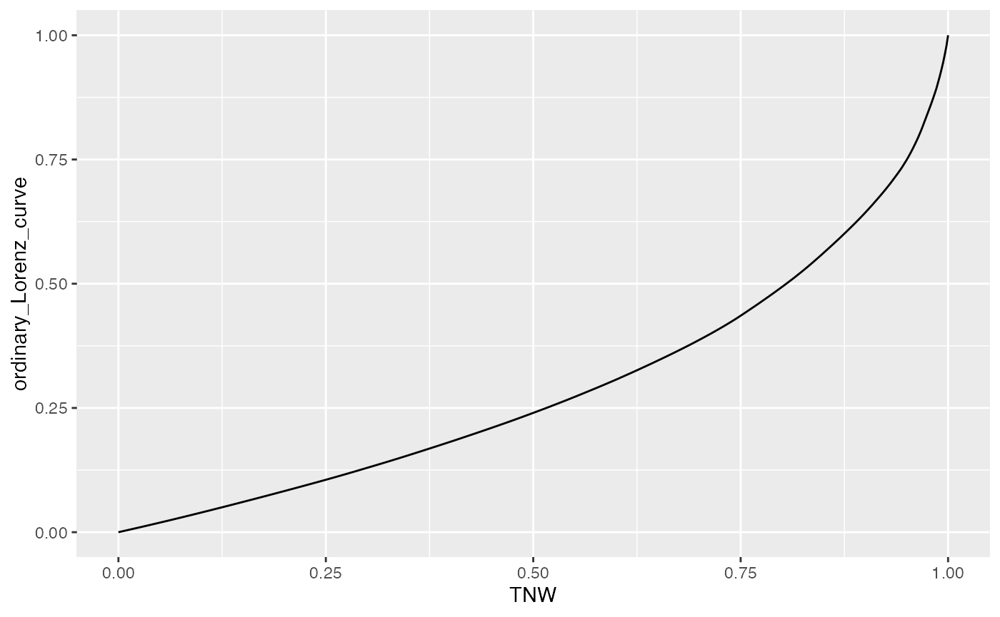
ggplot(billionaires, aes(TNW)) +
stat_lorenz(desc = TRUE) +
coord_fixed() +
geom_abline(linetype = "dashed") +
theme_minimal()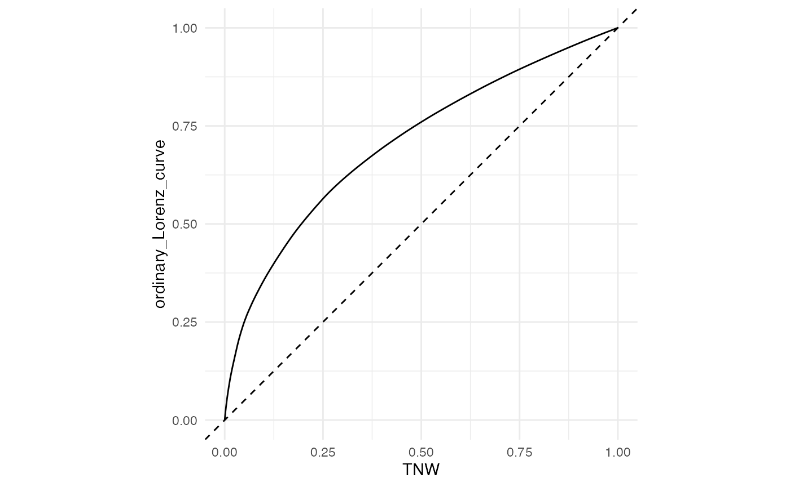
Répartition de la richesse dans les pays de l’OCDE
data(Richesse)
if(!("ggplot2" %in% installed.packages())){install.packages("ggplot2")}
library(ggplot2)
ggplot(Richesse, aes(Belgique)) +
stat_lorenz() +
coord_fixed() +
geom_abline(linetype = "dashed") +
theme_minimal() +
ylab("Courbe de Lorenz ordinaire") +
annotate_ineq(Richesse$Belgique,
measure_ineq = "Gini")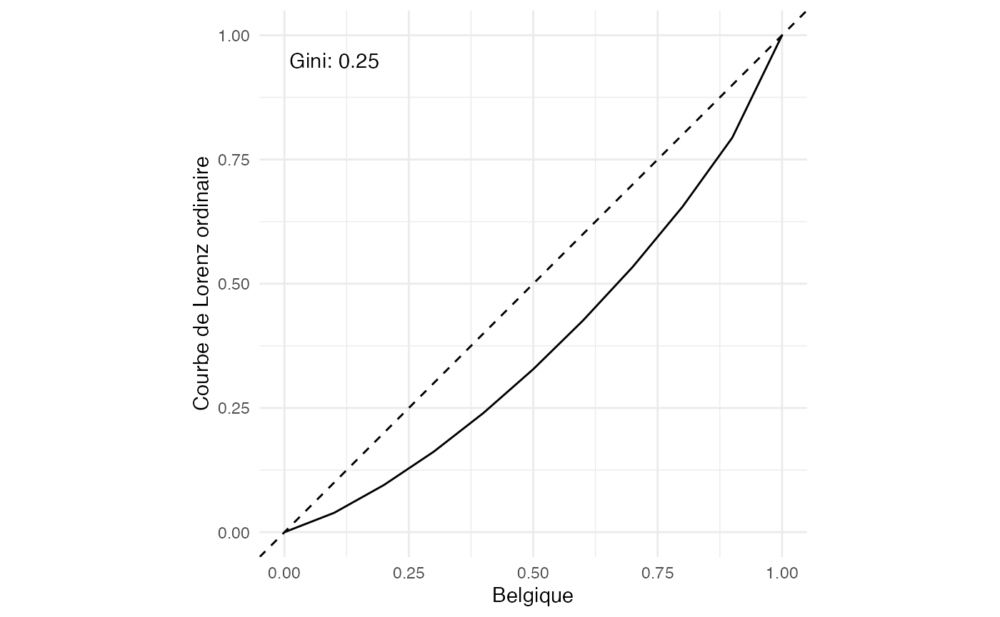
ggplot(Richesse, aes(France)) +
stat_lorenz() +
coord_fixed() +
geom_abline(linetype = "dashed") +
theme_minimal() +
ylab("Courbe de Lorenz ordinaire") +
annotate_ineq(Richesse$France,
measure_ineq = "Gini")Représentations graphiques univariés
Histogramme
data3 <- rep(c(2,3.5,4.75,5.75,7,9,10.5,11.75),c(4,8,10,14,20,12,9,3))
table(data3)
#> data3
#> 2 3.5 4.75 5.75 7 9 10.5 11.75
#> 4 8 10 14 20 12 9 3
data4 <-rnorm(25,8,3)
layout(1:2)
oldpar <- par()
par(mar = c(2, 2, 1, 1) + 0.1, mgp=c(2,1,0))
histofre <- hist(data4,breaks=c(min(c(data4,1)),3,4,5.5,6,8,10,11,max(12.5,data4)),main="",freq=F,xlab="",ylab="",lwd=2)
histofre <- hist(data4,main="",breaks=8,freq=F,xlab="",ylab="",lwd=2,xlim=c(min(data4),max(data4)))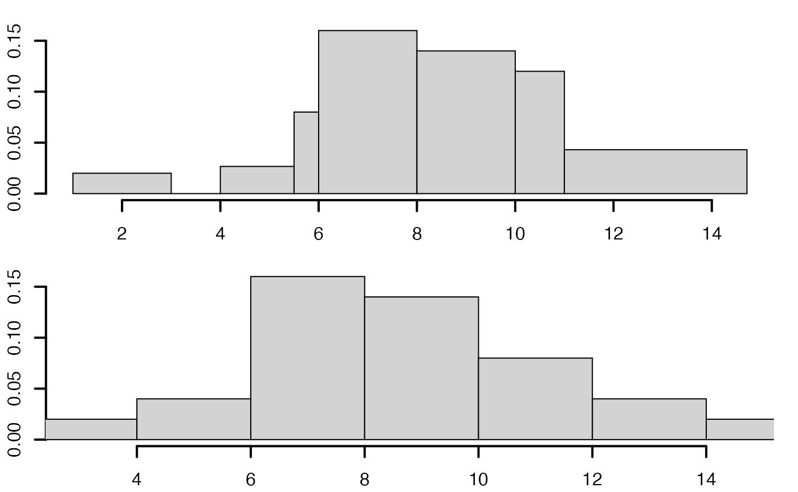
#suppressWarnings(par(oldpar))Avec le package MASS.
layout(1:2)
oldpar <- par()
par(mar = c(2, 2, 1, 1) + 0.1, mgp=c(2,1,0))
truehist(data4,breaks=c(min(c(data4,1)),3,4,5.5,6,8,10,11,max(12.5,data4)),main="",freq=F,xlab="",ylab="",lwd=2)
#> Warning in plot.window(...): "freq" n'est pas un paramètre graphique
#> Warning in plot.xy(xy, type, ...): "freq" n'est pas un paramètre graphique
#> Warning in axis(side = side, at = at, labels = labels, ...): "freq" n'est pas un
#> paramètre graphique
#> Warning in axis(side = side, at = at, labels = labels, ...): "freq" n'est pas un
#> paramètre graphique
#> Warning in box(...): "freq" n'est pas un paramètre graphique
#> Warning in title(...): "freq" n'est pas un paramètre graphique
truehist(data4,main="",nbins=8,h=diff(range(data4))/7,xlab="",ylab="",lwd=2,xlim=c(min(data4),max(data4)))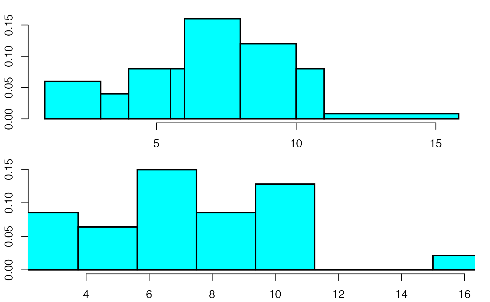
#suppressWarnings(par(oldpar))Par secteur de l’OCDE en 2020-Q3
data(Total_Secteur)
Total_Secteur
#> Secteur NameX Effectif
#> 1 AGR Agriculture 21143584
#> 2 CONSTR Construction 35197834
#> 3 INDUSwithoutCONSTR Industrie 69941778
#> 4 MFG Fabrication 64298384
#> 5 SERV Services 368931820
NameX <- Total_Secteur$NameX
Effectif <- Total_Secteur$Effectif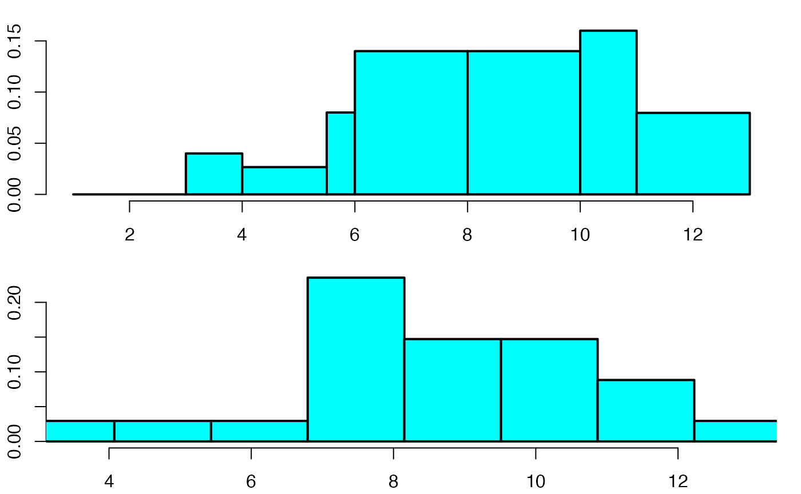
dotchart3(Effectif,labels=NameX,pch=19,col="#00FFFF")
par(mar = c(2, 2, 1, 1) + 0.1, mgp = c(2, 1, 0))
pie(Effectif,labels=NameX,col=c("black","#00FFFF","black","#00FFFF"),density = c(rep(10,4),15),border=c("black","#00FFFF","black","#00FFFF"),cex=1.2)#,density = c(4*(4:1))
par(mar = c(2, 2, 1, 1) + 0.1, mgp = c(2, 1, 0))
#pie(Effectif,labels=NameX,col=c("#00000050","#00FFFF80","#00000050","#00FFFF80"),border=c("#00000050","#00FFFF80","#00000050","#00FFFF80"),cex=1.2)
par(mar = c(2, 2, 1, 1) + 0.1, mgp = c(2, 1, 0))
pie(Effectif,labels=NameX,col=c("black","#00FFFF","black","#00FFFF"),border=c("black","#00FFFF","black","#00FFFF"),cex=1.2)
NameXbar <- NameX
par(mar = c(8.1, 2, 1, 1) + 0.1, mgp = c(2, 1, 0))
barplot(Effectif,names.arg=NameXbar,col=c("black","#00FFFF","black","#00FFFF"),cex.axis=1.2,cex.names=1.2)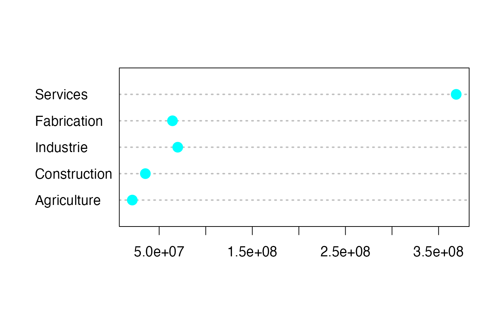
Par pays de l’OCDE en 2020-Q3
data(Total_Pays)
Total_Pays
#> NameX Effectif
#> 1 AUT 5337903
#> 2 BEL 5721200
#> 3 CAN 21122321
#> 4 CHE 5568900
#> 5 CHL 8732089
#> 6 COL 22791085
#> 7 CZE 7015674
#> 8 DNK 3343269
#> 9 ESP 22701902
#> 10 EST 200240
#> 11 FIN 1154495
#> 12 FRA 31775373
#> 13 GBR 37353540
#> 14 GRC 4382010
#> 15 HUN 5787638
#> 16 IRL 2692289
#> 17 ISL 40221
#> 18 ISR 4366750
#> 19 ITA 28409214
#> 20 JPN 81977909
#> 21 KOR 33262656
#> 22 LTU 1647480
#> 23 LUX 316889
#> 24 LVA 253516
#> 25 NLD 10143659
#> 26 NOR 3114348
#> 27 NZL 3242630
#> 28 POL 21006175
#> 29 PRT 5902090
#> 30 SVK 3385345
#> 31 SVN 1275598
#> 32 SWE 5872256
#> 33 TUR 33604952
#> 34 USA 171209618
Effectif<-Total_Pays$Effectif
NameX<-Total_Pays$NameX
NameX2<-Total_Pays$NameX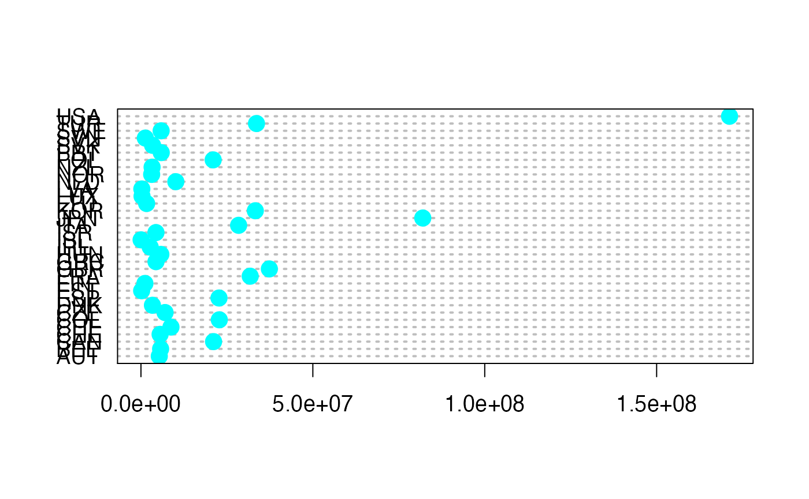
dotchart3(Effectif,labels=NameX2,pch=19,col="#00FFFF")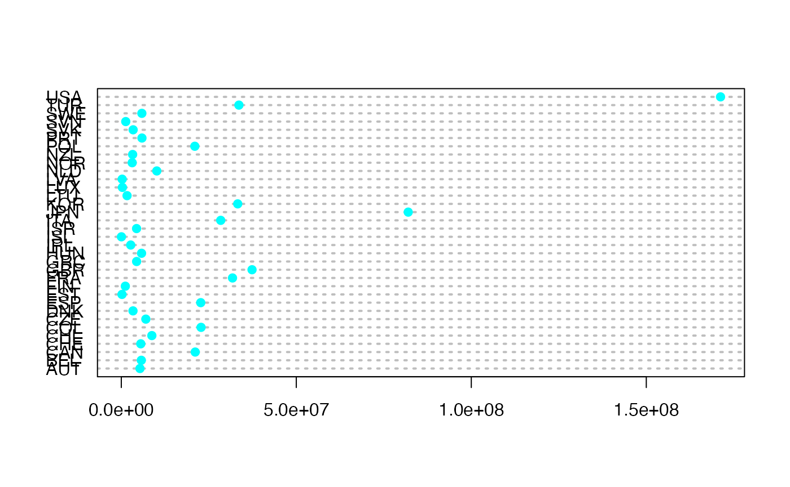
if(!("dplyr" %in% installed.packages())){install.packages("dplyr")}
library(dplyr)
#>
#> Attachement du package : 'dplyr'
#> The following object is masked from 'package:MASS':
#>
#> select
#> The following objects are masked from 'package:stats':
#>
#> filter, lag
#> The following objects are masked from 'package:base':
#>
#> intersect, setdiff, setequal, union
df <- data.frame(NameX2=rev(NameX2),
Effectif=rev(Effectif))
df <- df %>%
mutate(text_y = cumsum(Effectif) - Effectif/2)
df
#> NameX2 Effectif text_y
#> 1 USA 171209618 85604809
#> 2 TUR 33604952 188012094
#> 3 SWE 5872256 207750698
#> 4 SVN 1275598 211324625
#> 5 SVK 3385345 213655096
#> 6 PRT 5902090 218298814
#> 7 POL 21006175 231752946
#> 8 NZL 3242630 243877349
#> 9 NOR 3114348 247055838
#> 10 NLD 10143659 253684842
#> 11 LVA 253516 258883429
#> 12 LUX 316889 259168632
#> 13 LTU 1647480 260150816
#> 14 KOR 33262656 277605884
#> 15 JPN 81977909 335226166
#> 16 ITA 28409214 390419728
#> 17 ISR 4366750 406807710
#> 18 ISL 40221 409011196
#> 19 IRL 2692289 410377450
#> 20 HUN 5787638 414617414
#> 21 GRC 4382010 419702238
#> 22 GBR 37353540 440570013
#> 23 FRA 31775373 475134470
#> 24 FIN 1154495 491599404
#> 25 EST 200240 492276771
#> 26 ESP 22701902 503727842
#> 27 DNK 3343269 516750428
#> 28 CZE 7015674 521929899
#> 29 COL 22791085 536833278
#> 30 CHL 8732089 552594866
#> 31 CHE 5568900 559745360
#> 32 CAN 21122321 573090970
#> 33 BEL 5721200 586512731
#> 34 AUT 5337903 592042282
if(!("ggrepel" %in% installed.packages())){install.packages("ggrepel")}
library(ggrepel)
theme_set(theme_void())
p1 <- ggplot(data = df, aes(x = "", y = Effectif, fill = NameX2)) +
geom_bar(stat = "identity")+
geom_label_repel(aes(label = NameX2, y = text_y), nudge_x = 1.6)+
coord_polar(theta = "y") + theme(legend.position='none')+
theme(axis.title.x=element_blank(),
axis.text.x=element_blank(),
axis.ticks.x=element_blank())
p1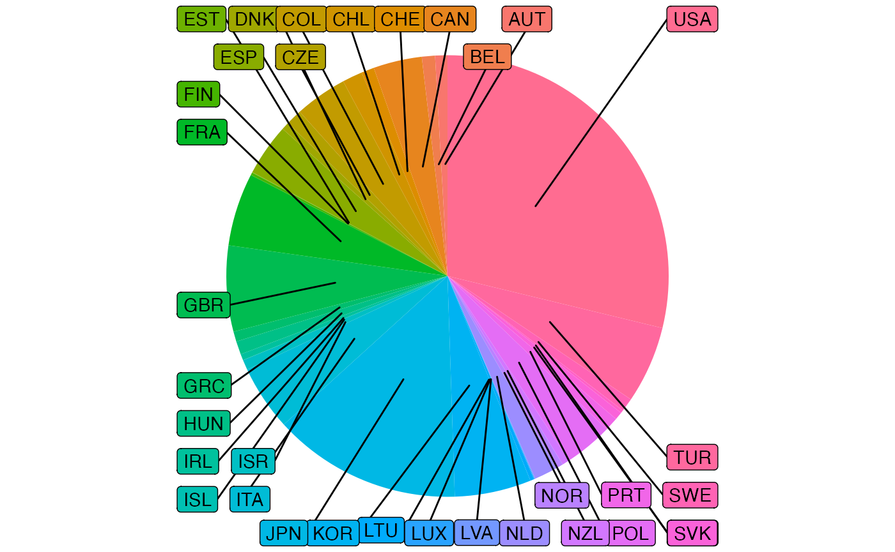
p1 + scale_fill_manual(values=rep(c(grey.colors(4)[c(2,4)]),17))
par(mar = c(2, 2, 1, 1) + 0.1, mgp = c(2, 1, 0))
pie(Effectif,labels=NameX2,col=c("black","#00FFFF","black","#00FFFF"),border=c("black","#00FFFF","black","#00FFFF"),cex=1.2)
par(mar = c(2, 2, 1, 1) + 0.1, mgp = c(2, 1, 0))
pie(Effectif,labels=NameX2,col=c("black","#00FFFF","black","#00FFFF"),density = 10,border=c("black","#00FFFF","black","#00FFFF"),cex=1.2)#,density = c(4*(4:1))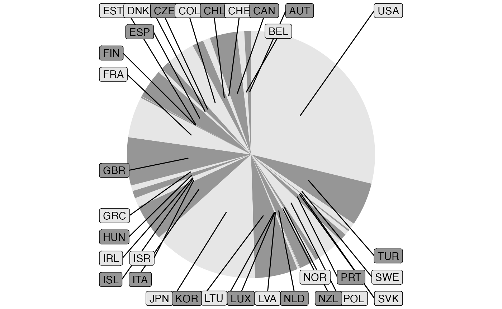
par(mar = c(6.3, 2, 1, 1) + 0.1, mgp = c(2, 1, 0))
NameXbar <- NameX2
barplot(Effectif,names.arg=NameXbar,col=c("black","#00FFFF","black","#00FFFF"),cex.axis=1.2,cex.names=1.2,las=3)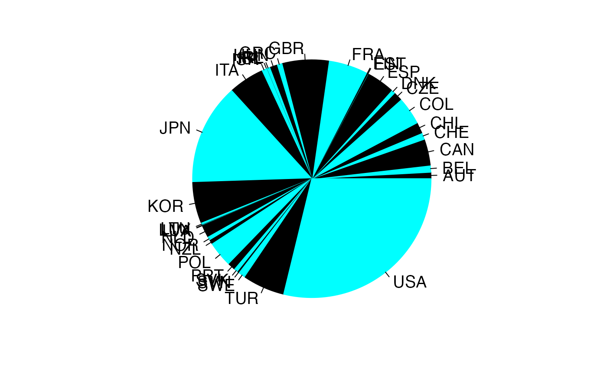
par(mar = c(2, 7, 1, 1) + 0.1, mgp = c(2, 1, 0))
NameXbar <- NameX2
barplot(Effectif,names.arg=NameXbar,col=c("black","#00FFFF","black","#00FFFF"),cex.axis=1.2,cex.names=1.2,las=1,horiz=TRUE)
#suppressWarnings(par(oldpar))Nombre de personnes par famille en
data(Personnes_Foyer)
ni <- Personnes_Foyer$ni
xi <- Personnes_Foyer$xi
oldpar <- par()
par(mar = c(2, 2, 1, 1) + 0.1, mgp=c(2,1,0))
plot(xi,ni,type='h',xlab="",ylab="",lwd=2,xaxt="n")
axis(1, at = 1:6, labels = c(1:5,6))
#suppressWarnings(par(oldpar))
if(!("ggplot2" %in% installed.packages())){install.packages("ggplot2")}
library(ggplot2)
p1 <- ggplot(Personnes_Foyer) +
geom_col(aes(y = ni, x = xi),width = .05)+
xlab( expression(paste(x[i])))+
ylab( expression(paste(n[i])))+
scale_x_discrete(name =expression(paste(x[i])),
limits=c("1","2","3","4","5","6"))
p1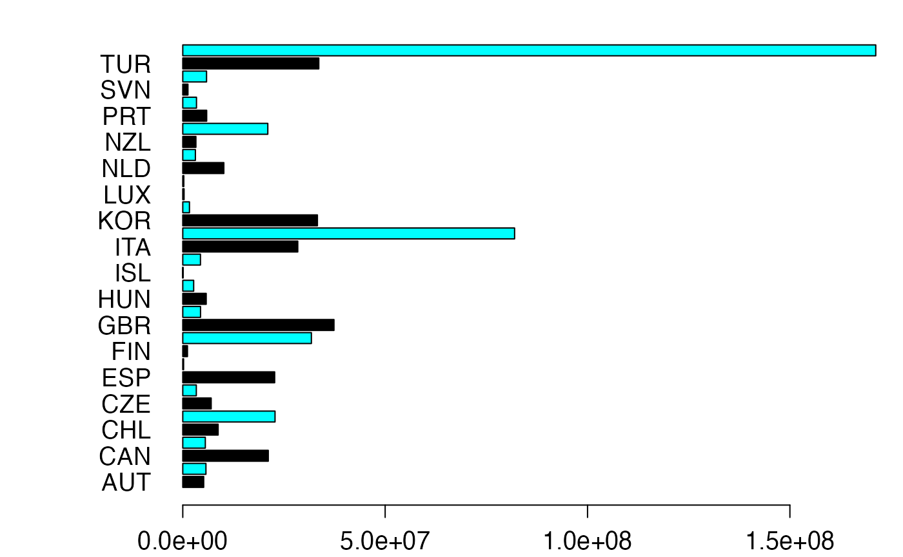
oldpar <- par()
p1 <- ggplot(Personnes_Foyer) +
geom_col(aes(y = ni/sum(ni), x = xi),width = .05)+
xlab( expression(paste(x[i])))+
ylab( expression(paste(n[i])))+
scale_x_discrete(name =expression(paste(x[i])),
limits=c("1","2","3","4","5","6"))
p1
#suppressWarnings(par(oldpar))
oldpar <- par()
ggplot(Personnes_Foyer, aes(x = xi)) +
geom_ribbon(aes(ymin=0,ymax=ni,group=""),fill=I("gray80"))+
geom_line(aes(y=ni,group=""), size=1, color=I("gray40")) +
geom_pointrange(aes(ymin=0,ymax=ni,y=ni,group=""), size=1)+
xlab( expression(paste(x[i])))+
ylab( expression(paste(n[i])))+
scale_x_discrete(name =expression(paste(x[i])),
limits=c("1","2","3","4","5","6"))
#suppressWarnings(par(oldpar))
oldpar <- par()
ggplot(Personnes_Foyer, aes(x = xi)) +
geom_ribbon(aes(ymin=0,ymax=ni/sum(ni),group=""),fill=I("gray80"))+
geom_line(aes(y=ni/sum(ni),group=""), size=1, color=I("gray40")) +
geom_pointrange(aes(ymin=0,ymax=ni/sum(ni),y=ni/sum(ni),group=""), size=1)+
xlab( expression(paste(x[i])))+
ylab( expression(paste(n[i])))+
scale_x_discrete(name =expression(paste(x[i])),
limits=c("1","2","3","4","5","6"))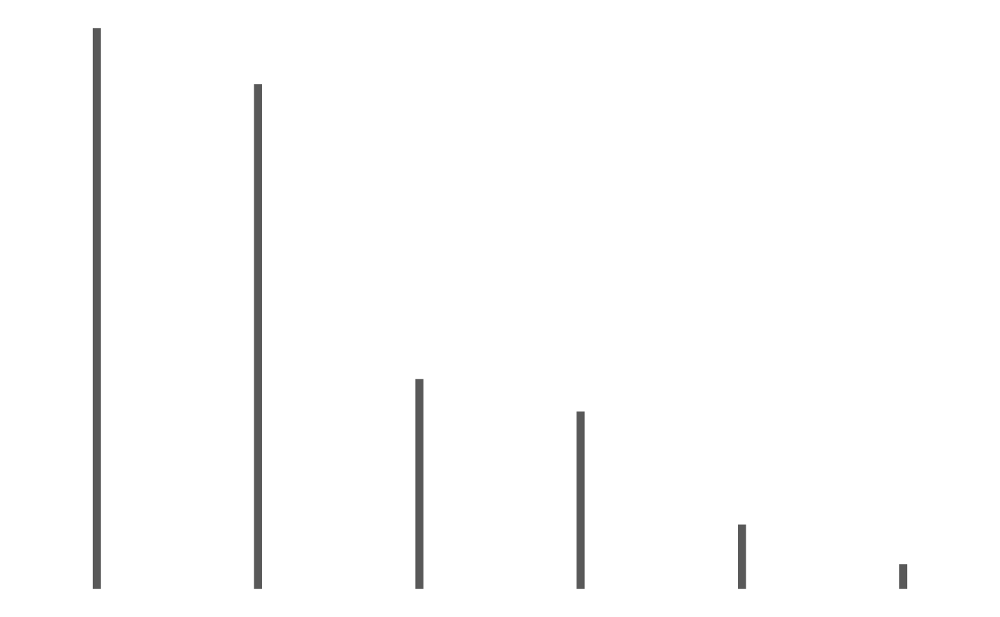
#suppressWarnings(par(oldpar))
nisum <- rep(ni[1],length(ni))
for (iii in 2:length(ni))
{
nisum[iii] <- nisum[iii-1]+ni[iii]
}
data3<-data.frame(xi=xi,nisum=nisum)
oldpar <- par()
ggplot(data3, aes(x = xi)) +
geom_ribbon(aes(ymin=0,ymax=nisum,group=""),fill=I("gray80"))+
geom_line(aes(y=nisum,group=""), size=1, color=I("gray40")) +
geom_pointrange(aes(ymin=0,ymax=nisum,y=nisum,group=""), size=1)+
xlab( expression(paste(x[i])))+
ylab( expression(paste(n[i])))+
scale_x_discrete(name =expression(paste(x[i])),
limits=c("1","2","3","4","5","6"))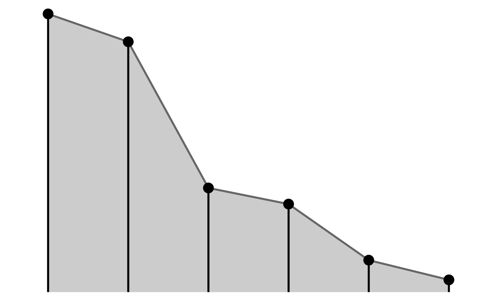
#suppressWarnings(par(oldpar))
data4<-data.frame(xi=xi,nifre=nisum/sum(ni))
oldpar <- par()
ggplot(data4, aes(x = xi)) +
geom_ribbon(aes(ymin=0,ymax=nifre,group=""),fill=I("gray80"))+
geom_line(aes(y=nifre,group=""), size=1, color=I("gray40")) +
geom_pointrange(aes(ymin=0,ymax=nifre,y=nifre,group=""), size=1)+
xlab( expression(paste(x[i])))+
ylab( expression(paste(n[i])))+
scale_x_discrete(name =expression(paste(x[i])),
limits=c("1","2","3","4","5","6"))
#suppressWarnings(par(oldpar))
p1 <- ggplot(data3) +
geom_col(aes(y = nisum, x = xi),width = .05)+
xlab( expression(paste(x[i])))+
ylab( expression(paste(n[i])))+
scale_x_discrete(name =expression(paste(x[i])),
limits=c("1","2","3","4","5","6"))
p1
Population du Canada
data(AgevsProter_Canada_full)
valeursall <- margin.table(as.matrix(AgevsProter_Canada_full[,-1]),1)
valeurs <- valeursall[-length(valeursall)]
valeurs
#> 0 à 4 ans 5 à 9 ans 10 à 14 ans 15 à 19 ans 20 à 24 ans 25 à 29 ans
#> 1901542 2021227 2045914 2073871 2453892 2617164
#> 30 à 34 ans 35 à 39 ans 40 à 44 ans 45 à 49 ans 50 à 54 ans 55 à 59 ans
#> 2632781 2600529 2432821 2354362 2409701 2701791
#> 60 à 64 ans 65 à 69 ans 70 à 74 ans 75 à 79 ans 80 à 84 ans 85 à 89 ans
#> 2517902 2127557 1753443 1197845 798753 511048
#> 90 à 94 ans 95 à 99 ans
#> 245878 73725
centres <- c(5*(0:19)+2.5)
limites <- 5*(0:20)
oldpar <- par()
data3 <- rep(centres,valeurs)
table(data3)
#> data3
#> 2.5 7.5 12.5 17.5 22.5 27.5 32.5 37.5 42.5 47.5
#> 1901542 2021227 2045914 2073871 2453892 2617164 2632781 2600529 2432821 2354362
#> 52.5 57.5 62.5 67.5 72.5 77.5 82.5 87.5 92.5 97.5
#> 2409701 2701791 2517902 2127557 1753443 1197845 798753 511048 245878 73725
oldpar <- par()
par(mar = c(2, 2, 1, 1) + 0.1, mgp=c(2,1,0))
histofre <- hist(data3,breaks=limites,main="",freq=T,xlab="",ylab="",lwd=2,density=10)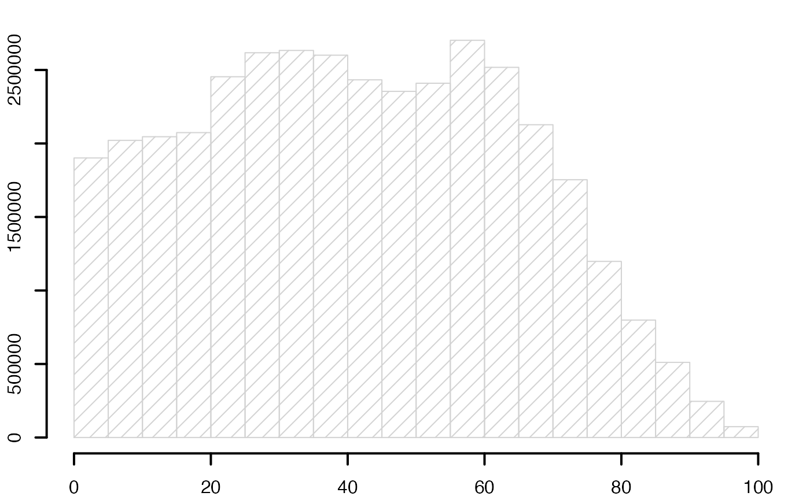
#suppressWarnings(par(oldpar))
oldpar <- par()
par(mar = c(2, 2, 1, 1) + 0.1, mgp=c(2,1,0))
histofre <- hist(data3,breaks=limites,main="",freq=F,xlab="",ylab="",lwd=2,density=10)
#suppressWarnings(par(oldpar))
oldpar <- par()
par(mar = c(2, 2, 1, 1) + 0.1, mgp=c(2,1,0))
histofre <- hist(data3,breaks=limites,main="",freq=F,xlab="",ylab="",lwd=2,density=10)
segments(histofre$mids[-length(histofre$mids)],histofre$density[-length(histofre$density)],histofre$mids[-1],histofre$density[-1],lwd=2,col="#00FFFF")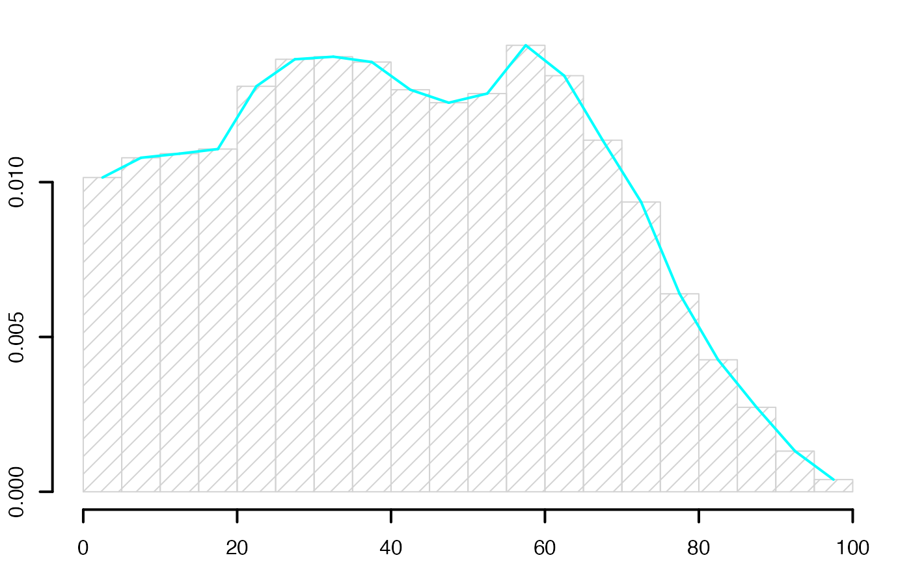
#suppressWarnings(par(oldpar))
nihistsum <- rep(0,length(valeurs))
for (iii in 2:(length(valeurs)+1))
{
nihistsum[iii] <- nihistsum[iii-1]+(valeurs)[iii-1]
}
data4 <- rep(centres,cumsum(valeurs))
table(data4)
#> data4
#> 2.5 7.5 12.5 17.5 22.5 27.5 32.5 37.5
#> 1901542 3922769 5968683 8042554 10496446 13113610 15746391 18346920
#> 42.5 47.5 52.5 57.5 62.5 67.5 72.5 77.5
#> 20779741 23134103 25543804 28245595 30763497 32891054 34644497 35842342
#> 82.5 87.5 92.5 97.5
#> 36641095 37152143 37398021 37471746
oldpar <- par()
par(mar = c(2, 2, 1, 1) + 0.1, mgp=c(2,1,0))
histofrecum <- hist(data4,breaks=limites,main="",freq=T,xlab="",ylab="",lwd=2,yaxt="n",density=10)
axis(2,at=c(0,.2,.4,.6,.8,1)*max(histofrecum$counts),labels=format(c(0,.2,.4,.6,.8,1)*max(histofrecum$counts),scientific = TRUE,digits = 3),lwd=2)
#suppressWarnings(par(oldpar))
oldpar <- par()
par(mar = c(2, 2, 1, 1) + 0.1, mgp=c(2,1,0))
histofrecum <- hist(data4,breaks=limites,main="",freq=F,xlab="",ylab="",lwd=2,yaxt="n",density=10)
segments(histofrecum$mids[-length(histofrecum$mids)],histofrecum$density[-length(histofrecum$mids)],histofrecum$mids[-1],histofrecum$density[-1],lwd=2,col="#00FFFF")
axis(2,at=c(0,.2,.4,.6,.8,1)*max(histofrecum$dens),labels=c(0,.2,.4,.6,.8,1),lwd=2)
#suppressWarnings(par(oldpar))Bonus : Sièges Voix
data(Sieges_Voix)
str(Sieges_Voix)
#> 'data.frame': 27 obs. of 4 variables:
#> $ Etats.Membres : chr "Allemagne" "Autriche" "Belgique" "Bulgarie" ...
#> $ Date.entrée : int 1957 1995 1957 2007 2004 1973 1986 2004 1995 1957 ...
#> $ Sièges.au.parlement: int 99 18 24 0 6 14 54 6 14 78 ...
#> $ Voix.au.conseil : int 29 10 12 0 4 7 27 4 7 29 ...
summary(Sieges_Voix)
#> Etats.Membres Date.entrée Sièges.au.parlement Voix.au.conseil
#> Length:27 Min. :1957 Min. : 0.00 Min. : 0.00
#> Class :character 1st Qu.:1973 1st Qu.: 8.00 1st Qu.: 4.00
#> Mode :character Median :1995 Median :18.00 Median :10.00
#> Mean :1987 Mean :27.11 Mean :11.89
#> 3rd Qu.:2004 3rd Qu.:25.50 3rd Qu.:12.50
#> Max. :2007 Max. :99.00 Max. :29.00
NameX <- Sieges_Voix$Etats.Membres
NombreSieges <- Sieges_Voix$Sièges.au.parlement
NombreVoix <- Sieges_Voix$Voix.au.conseil
NameXX <- names(table(Sieges_Voix$Date.entrée))
NombreAnnees <- as.vector(table(Sieges_Voix$Date.entrée))
names(NombreSieges) <- NameX
NombreSieges
#> Allemagne Autriche Belgique Bulgarie
#> 99 18 24 0
#> Chypre Danemark Espagne Estonie
#> 6 14 54 6
#> Finlande France Grèce Hongrie
#> 14 78 24 24
#> Irlande Italie Lettonie Lituanie
#> 13 78 9 13
#> Luxembourg Malte Pays-Bas Pologne
#> 6 5 27 54
#> Portugal République Tchèque Roumanie Royaume-Uni
#> 24 24 0 78
#> Slovaquie Slovénie Suède
#> 14 7 19
rep(NameX,NombreSieges)
#> [1] "Allemagne" "Allemagne" "Allemagne"
#> [4] "Allemagne" "Allemagne" "Allemagne"
#> [7] "Allemagne" "Allemagne" "Allemagne"
#> [10] "Allemagne" "Allemagne" "Allemagne"
#> [13] "Allemagne" "Allemagne" "Allemagne"
#> [16] "Allemagne" "Allemagne" "Allemagne"
#> [19] "Allemagne" "Allemagne" "Allemagne"
#> [22] "Allemagne" "Allemagne" "Allemagne"
#> [25] "Allemagne" "Allemagne" "Allemagne"
#> [28] "Allemagne" "Allemagne" "Allemagne"
#> [31] "Allemagne" "Allemagne" "Allemagne"
#> [34] "Allemagne" "Allemagne" "Allemagne"
#> [37] "Allemagne" "Allemagne" "Allemagne"
#> [40] "Allemagne" "Allemagne" "Allemagne"
#> [43] "Allemagne" "Allemagne" "Allemagne"
#> [46] "Allemagne" "Allemagne" "Allemagne"
#> [49] "Allemagne" "Allemagne" "Allemagne"
#> [52] "Allemagne" "Allemagne" "Allemagne"
#> [55] "Allemagne" "Allemagne" "Allemagne"
#> [58] "Allemagne" "Allemagne" "Allemagne"
#> [61] "Allemagne" "Allemagne" "Allemagne"
#> [64] "Allemagne" "Allemagne" "Allemagne"
#> [67] "Allemagne" "Allemagne" "Allemagne"
#> [70] "Allemagne" "Allemagne" "Allemagne"
#> [73] "Allemagne" "Allemagne" "Allemagne"
#> [76] "Allemagne" "Allemagne" "Allemagne"
#> [79] "Allemagne" "Allemagne" "Allemagne"
#> [82] "Allemagne" "Allemagne" "Allemagne"
#> [85] "Allemagne" "Allemagne" "Allemagne"
#> [88] "Allemagne" "Allemagne" "Allemagne"
#> [91] "Allemagne" "Allemagne" "Allemagne"
#> [94] "Allemagne" "Allemagne" "Allemagne"
#> [97] "Allemagne" "Allemagne" "Allemagne"
#> [100] "Autriche" "Autriche" "Autriche"
#> [103] "Autriche" "Autriche" "Autriche"
#> [106] "Autriche" "Autriche" "Autriche"
#> [109] "Autriche" "Autriche" "Autriche"
#> [112] "Autriche" "Autriche" "Autriche"
#> [115] "Autriche" "Autriche" "Autriche"
#> [118] "Belgique" "Belgique" "Belgique"
#> [121] "Belgique" "Belgique" "Belgique"
#> [124] "Belgique" "Belgique" "Belgique"
#> [127] "Belgique" "Belgique" "Belgique"
#> [130] "Belgique" "Belgique" "Belgique"
#> [133] "Belgique" "Belgique" "Belgique"
#> [136] "Belgique" "Belgique" "Belgique"
#> [139] "Belgique" "Belgique" "Belgique"
#> [142] "Chypre" "Chypre" "Chypre"
#> [145] "Chypre" "Chypre" "Chypre"
#> [148] "Danemark" "Danemark" "Danemark"
#> [151] "Danemark" "Danemark" "Danemark"
#> [154] "Danemark" "Danemark" "Danemark"
#> [157] "Danemark" "Danemark" "Danemark"
#> [160] "Danemark" "Danemark" "Espagne"
#> [163] "Espagne" "Espagne" "Espagne"
#> [166] "Espagne" "Espagne" "Espagne"
#> [169] "Espagne" "Espagne" "Espagne"
#> [172] "Espagne" "Espagne" "Espagne"
#> [175] "Espagne" "Espagne" "Espagne"
#> [178] "Espagne" "Espagne" "Espagne"
#> [181] "Espagne" "Espagne" "Espagne"
#> [184] "Espagne" "Espagne" "Espagne"
#> [187] "Espagne" "Espagne" "Espagne"
#> [190] "Espagne" "Espagne" "Espagne"
#> [193] "Espagne" "Espagne" "Espagne"
#> [196] "Espagne" "Espagne" "Espagne"
#> [199] "Espagne" "Espagne" "Espagne"
#> [202] "Espagne" "Espagne" "Espagne"
#> [205] "Espagne" "Espagne" "Espagne"
#> [208] "Espagne" "Espagne" "Espagne"
#> [211] "Espagne" "Espagne" "Espagne"
#> [214] "Espagne" "Espagne" "Estonie"
#> [217] "Estonie" "Estonie" "Estonie"
#> [220] "Estonie" "Estonie" "Finlande"
#> [223] "Finlande" "Finlande" "Finlande"
#> [226] "Finlande" "Finlande" "Finlande"
#> [229] "Finlande" "Finlande" "Finlande"
#> [232] "Finlande" "Finlande" "Finlande"
#> [235] "Finlande" "France" "France"
#> [238] "France" "France" "France"
#> [241] "France" "France" "France"
#> [244] "France" "France" "France"
#> [247] "France" "France" "France"
#> [250] "France" "France" "France"
#> [253] "France" "France" "France"
#> [256] "France" "France" "France"
#> [259] "France" "France" "France"
#> [262] "France" "France" "France"
#> [265] "France" "France" "France"
#> [268] "France" "France" "France"
#> [271] "France" "France" "France"
#> [274] "France" "France" "France"
#> [277] "France" "France" "France"
#> [280] "France" "France" "France"
#> [283] "France" "France" "France"
#> [286] "France" "France" "France"
#> [289] "France" "France" "France"
#> [292] "France" "France" "France"
#> [295] "France" "France" "France"
#> [298] "France" "France" "France"
#> [301] "France" "France" "France"
#> [304] "France" "France" "France"
#> [307] "France" "France" "France"
#> [310] "France" "France" "France"
#> [313] "France" "Grèce" "Grèce"
#> [316] "Grèce" "Grèce" "Grèce"
#> [319] "Grèce" "Grèce" "Grèce"
#> [322] "Grèce" "Grèce" "Grèce"
#> [325] "Grèce" "Grèce" "Grèce"
#> [328] "Grèce" "Grèce" "Grèce"
#> [331] "Grèce" "Grèce" "Grèce"
#> [334] "Grèce" "Grèce" "Grèce"
#> [337] "Grèce" "Hongrie" "Hongrie"
#> [340] "Hongrie" "Hongrie" "Hongrie"
#> [343] "Hongrie" "Hongrie" "Hongrie"
#> [346] "Hongrie" "Hongrie" "Hongrie"
#> [349] "Hongrie" "Hongrie" "Hongrie"
#> [352] "Hongrie" "Hongrie" "Hongrie"
#> [355] "Hongrie" "Hongrie" "Hongrie"
#> [358] "Hongrie" "Hongrie" "Hongrie"
#> [361] "Hongrie" "Irlande" "Irlande"
#> [364] "Irlande" "Irlande" "Irlande"
#> [367] "Irlande" "Irlande" "Irlande"
#> [370] "Irlande" "Irlande" "Irlande"
#> [373] "Irlande" "Irlande" "Italie"
#> [376] "Italie" "Italie" "Italie"
#> [379] "Italie" "Italie" "Italie"
#> [382] "Italie" "Italie" "Italie"
#> [385] "Italie" "Italie" "Italie"
#> [388] "Italie" "Italie" "Italie"
#> [391] "Italie" "Italie" "Italie"
#> [394] "Italie" "Italie" "Italie"
#> [397] "Italie" "Italie" "Italie"
#> [400] "Italie" "Italie" "Italie"
#> [403] "Italie" "Italie" "Italie"
#> [406] "Italie" "Italie" "Italie"
#> [409] "Italie" "Italie" "Italie"
#> [412] "Italie" "Italie" "Italie"
#> [415] "Italie" "Italie" "Italie"
#> [418] "Italie" "Italie" "Italie"
#> [421] "Italie" "Italie" "Italie"
#> [424] "Italie" "Italie" "Italie"
#> [427] "Italie" "Italie" "Italie"
#> [430] "Italie" "Italie" "Italie"
#> [433] "Italie" "Italie" "Italie"
#> [436] "Italie" "Italie" "Italie"
#> [439] "Italie" "Italie" "Italie"
#> [442] "Italie" "Italie" "Italie"
#> [445] "Italie" "Italie" "Italie"
#> [448] "Italie" "Italie" "Italie"
#> [451] "Italie" "Italie" "Lettonie"
#> [454] "Lettonie" "Lettonie" "Lettonie"
#> [457] "Lettonie" "Lettonie" "Lettonie"
#> [460] "Lettonie" "Lettonie" "Lituanie"
#> [463] "Lituanie" "Lituanie" "Lituanie"
#> [466] "Lituanie" "Lituanie" "Lituanie"
#> [469] "Lituanie" "Lituanie" "Lituanie"
#> [472] "Lituanie" "Lituanie" "Lituanie"
#> [475] "Luxembourg" "Luxembourg" "Luxembourg"
#> [478] "Luxembourg" "Luxembourg" "Luxembourg"
#> [481] "Malte" "Malte" "Malte"
#> [484] "Malte" "Malte" "Pays-Bas"
#> [487] "Pays-Bas" "Pays-Bas" "Pays-Bas"
#> [490] "Pays-Bas" "Pays-Bas" "Pays-Bas"
#> [493] "Pays-Bas" "Pays-Bas" "Pays-Bas"
#> [496] "Pays-Bas" "Pays-Bas" "Pays-Bas"
#> [499] "Pays-Bas" "Pays-Bas" "Pays-Bas"
#> [502] "Pays-Bas" "Pays-Bas" "Pays-Bas"
#> [505] "Pays-Bas" "Pays-Bas" "Pays-Bas"
#> [508] "Pays-Bas" "Pays-Bas" "Pays-Bas"
#> [511] "Pays-Bas" "Pays-Bas" "Pologne"
#> [514] "Pologne" "Pologne" "Pologne"
#> [517] "Pologne" "Pologne" "Pologne"
#> [520] "Pologne" "Pologne" "Pologne"
#> [523] "Pologne" "Pologne" "Pologne"
#> [526] "Pologne" "Pologne" "Pologne"
#> [529] "Pologne" "Pologne" "Pologne"
#> [532] "Pologne" "Pologne" "Pologne"
#> [535] "Pologne" "Pologne" "Pologne"
#> [538] "Pologne" "Pologne" "Pologne"
#> [541] "Pologne" "Pologne" "Pologne"
#> [544] "Pologne" "Pologne" "Pologne"
#> [547] "Pologne" "Pologne" "Pologne"
#> [550] "Pologne" "Pologne" "Pologne"
#> [553] "Pologne" "Pologne" "Pologne"
#> [556] "Pologne" "Pologne" "Pologne"
#> [559] "Pologne" "Pologne" "Pologne"
#> [562] "Pologne" "Pologne" "Pologne"
#> [565] "Pologne" "Pologne" "Portugal"
#> [568] "Portugal" "Portugal" "Portugal"
#> [571] "Portugal" "Portugal" "Portugal"
#> [574] "Portugal" "Portugal" "Portugal"
#> [577] "Portugal" "Portugal" "Portugal"
#> [580] "Portugal" "Portugal" "Portugal"
#> [583] "Portugal" "Portugal" "Portugal"
#> [586] "Portugal" "Portugal" "Portugal"
#> [589] "Portugal" "Portugal" "République Tchèque"
#> [592] "République Tchèque" "République Tchèque" "République Tchèque"
#> [595] "République Tchèque" "République Tchèque" "République Tchèque"
#> [598] "République Tchèque" "République Tchèque" "République Tchèque"
#> [601] "République Tchèque" "République Tchèque" "République Tchèque"
#> [604] "République Tchèque" "République Tchèque" "République Tchèque"
#> [607] "République Tchèque" "République Tchèque" "République Tchèque"
#> [610] "République Tchèque" "République Tchèque" "République Tchèque"
#> [613] "République Tchèque" "République Tchèque" "Royaume-Uni"
#> [616] "Royaume-Uni" "Royaume-Uni" "Royaume-Uni"
#> [619] "Royaume-Uni" "Royaume-Uni" "Royaume-Uni"
#> [622] "Royaume-Uni" "Royaume-Uni" "Royaume-Uni"
#> [625] "Royaume-Uni" "Royaume-Uni" "Royaume-Uni"
#> [628] "Royaume-Uni" "Royaume-Uni" "Royaume-Uni"
#> [631] "Royaume-Uni" "Royaume-Uni" "Royaume-Uni"
#> [634] "Royaume-Uni" "Royaume-Uni" "Royaume-Uni"
#> [637] "Royaume-Uni" "Royaume-Uni" "Royaume-Uni"
#> [640] "Royaume-Uni" "Royaume-Uni" "Royaume-Uni"
#> [643] "Royaume-Uni" "Royaume-Uni" "Royaume-Uni"
#> [646] "Royaume-Uni" "Royaume-Uni" "Royaume-Uni"
#> [649] "Royaume-Uni" "Royaume-Uni" "Royaume-Uni"
#> [652] "Royaume-Uni" "Royaume-Uni" "Royaume-Uni"
#> [655] "Royaume-Uni" "Royaume-Uni" "Royaume-Uni"
#> [658] "Royaume-Uni" "Royaume-Uni" "Royaume-Uni"
#> [661] "Royaume-Uni" "Royaume-Uni" "Royaume-Uni"
#> [664] "Royaume-Uni" "Royaume-Uni" "Royaume-Uni"
#> [667] "Royaume-Uni" "Royaume-Uni" "Royaume-Uni"
#> [670] "Royaume-Uni" "Royaume-Uni" "Royaume-Uni"
#> [673] "Royaume-Uni" "Royaume-Uni" "Royaume-Uni"
#> [676] "Royaume-Uni" "Royaume-Uni" "Royaume-Uni"
#> [679] "Royaume-Uni" "Royaume-Uni" "Royaume-Uni"
#> [682] "Royaume-Uni" "Royaume-Uni" "Royaume-Uni"
#> [685] "Royaume-Uni" "Royaume-Uni" "Royaume-Uni"
#> [688] "Royaume-Uni" "Royaume-Uni" "Royaume-Uni"
#> [691] "Royaume-Uni" "Royaume-Uni" "Slovaquie"
#> [694] "Slovaquie" "Slovaquie" "Slovaquie"
#> [697] "Slovaquie" "Slovaquie" "Slovaquie"
#> [700] "Slovaquie" "Slovaquie" "Slovaquie"
#> [703] "Slovaquie" "Slovaquie" "Slovaquie"
#> [706] "Slovaquie" "Slovénie" "Slovénie"
#> [709] "Slovénie" "Slovénie" "Slovénie"
#> [712] "Slovénie" "Slovénie" "Suède"
#> [715] "Suède" "Suède" "Suède"
#> [718] "Suède" "Suède" "Suède"
#> [721] "Suède" "Suède" "Suède"
#> [724] "Suède" "Suède" "Suède"
#> [727] "Suède" "Suède" "Suède"
#> [730] "Suède" "Suède" "Suède"
oldpar <- par()
par(mar = c(2, 2, 1, 1) + 0.1, mgp = c(2, 1, 0))
dotchart3(NombreSieges,labels=NameX,pch=19,col="#00FFFF")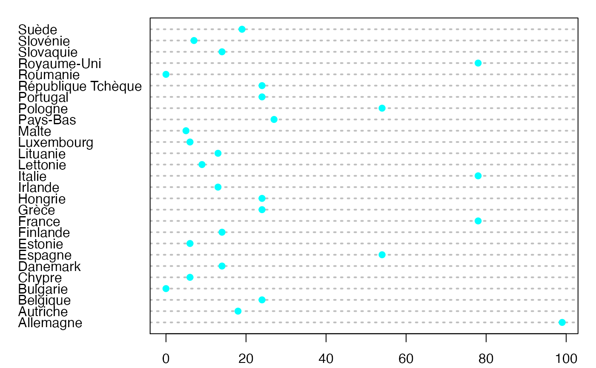
dotchart3(NombreSieges,labels=NameX,pch=19,col="#00FFFF",cex=1.6,cex.axis=.8)
par(mar = c(2, 2, 1, 1) + 0.1, mgp = c(2, 1, 0))
dotchart3(NombreVoix,labels=NameX,pch=19,col="#00FFFF",cex=1.6,cex.axis=1.2)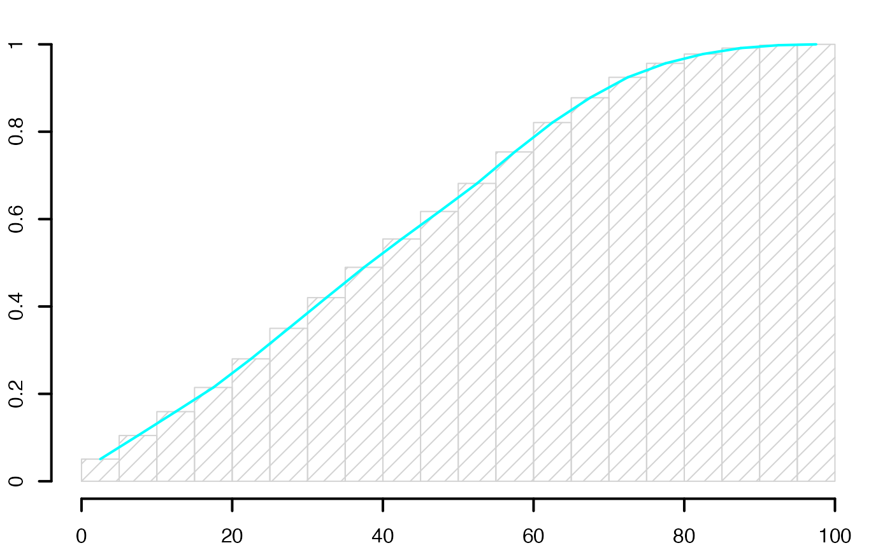
dotchart3(NombreVoix,labels=NameX,pch=19,col="#00FFFF")
par(mar = c(2, 2, 1, 1) + 0.1, mgp = c(2, 1, 0))
dotchart3(NombreAnnees,labels=NameXX,pch=19,col="#00FFFF",cex=1.6,cex.axis=1.2)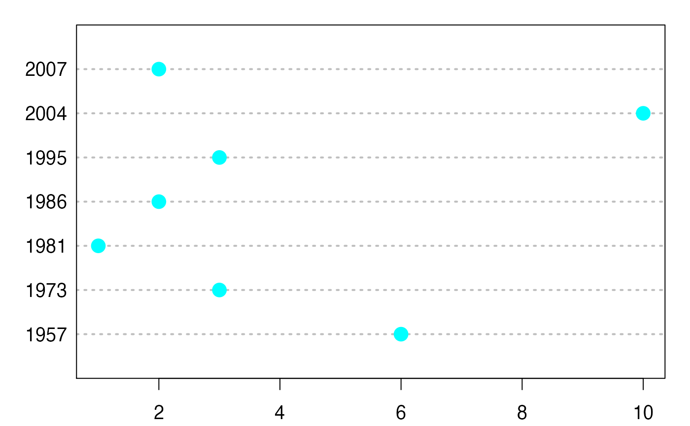
dotchart3(NombreAnnees,labels=NameXX,pch=19,col="#00FFFF")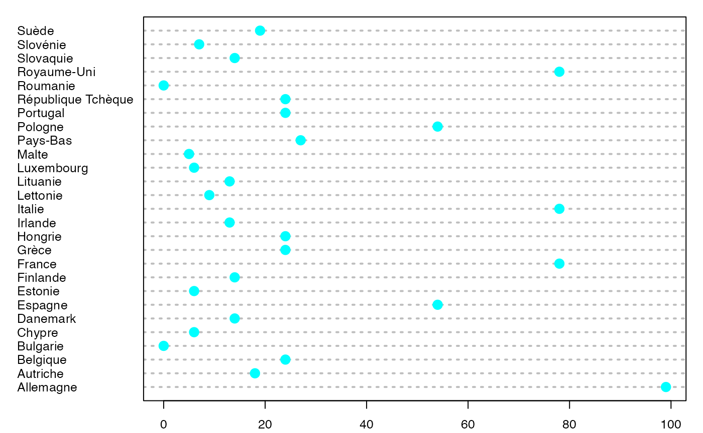
NameXbar <- NameX
par(mar = c(9.1, 2, 1, 1) + 0.1, mgp = c(2, 1, 0))
barplot(NombreSieges/sum(NombreSieges),names.arg=NameXbar,col=c("black","#00FFFF","black","#00FFFF"),density = 10,border=c("black","#00FFFF","black","#00FFFF"),cex.axis=1.2,las=3)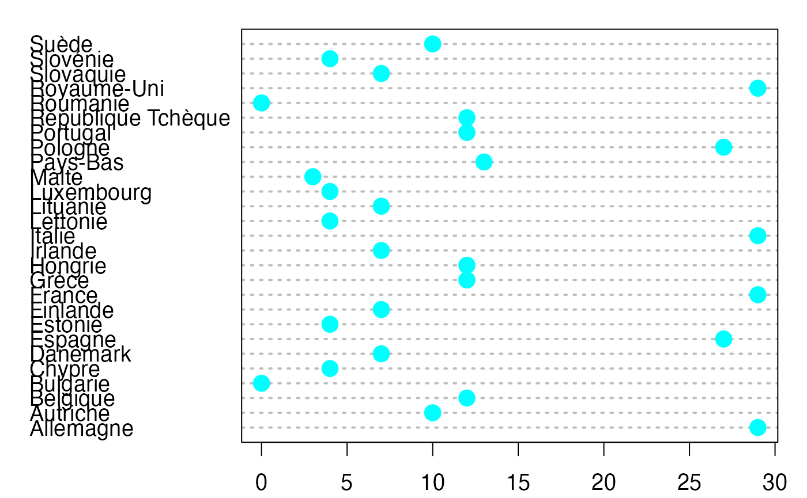
NameXbar <- NameX
par(mar = c(9.1, 2, 1, 1) + 0.1, mgp = c(2, 1, 0))
barplot(NombreVoix/sum(NombreVoix),names.arg=NameXbar,col=c("black","#00FFFF","black","#00FFFF"),density = 10,border=c("black","#00FFFF","black","#00FFFF"),cex.axis=1.2,las=3)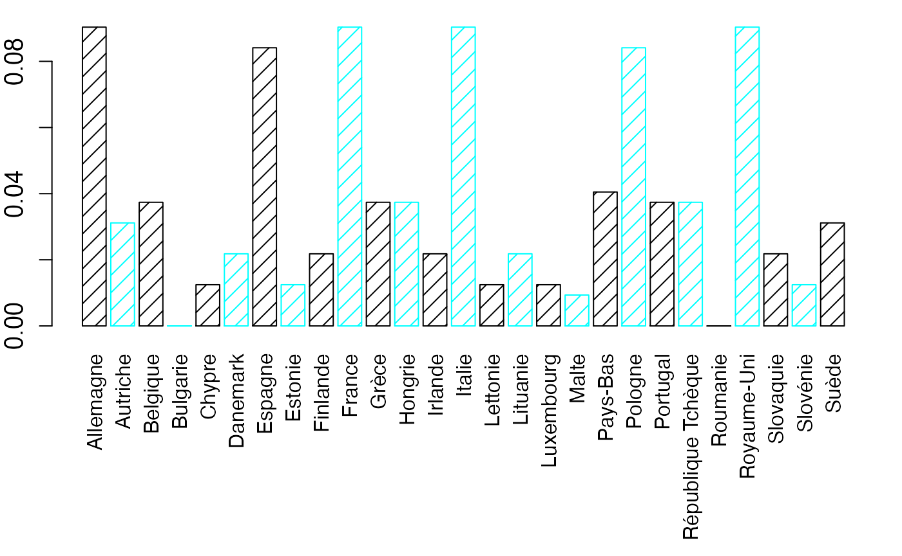
NameXbar <- NameXX
par(mar = c(3.1, 2, 1, 1) + 0.1, mgp = c(2, 1, 0))
barplot(NombreAnnees/sum(NombreAnnees),names.arg=NameXbar,col=c("black","#00FFFF","black","#00FFFF"),density = 10,border=c("black","#00FFFF","black","#00FFFF"),cex.axis=1.2,las=3)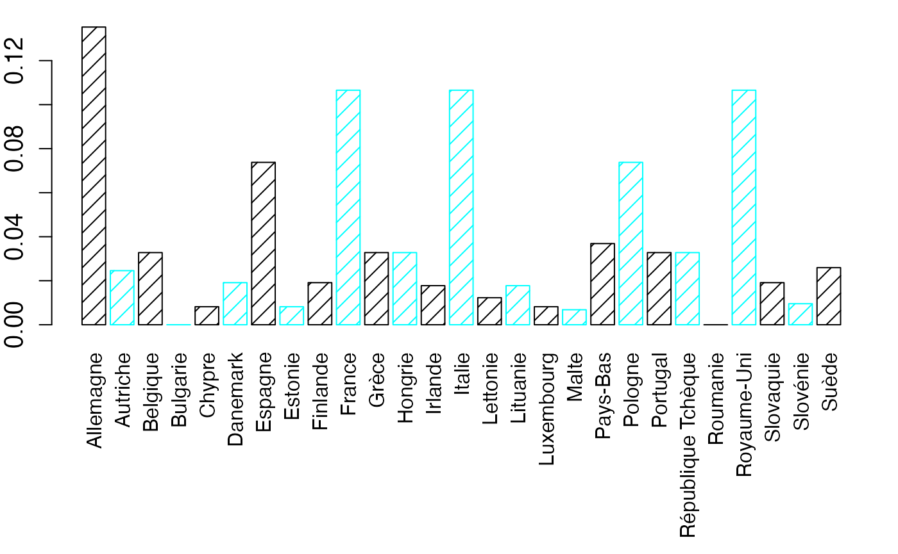
NameX[22] <- "République\nTchèque"
par(mar = c(2, 2, 1, 1) + 0.1, mgp = c(2, 1, 0))
pie(NombreSieges,labels=NameX,col=c("black","#00FFFF","black","#00FFFF"),init.angle = 70,density = 10,border=c("black","#00FFFF","black","#00FFFF"),cex=1)#,density = c(4*(4:1))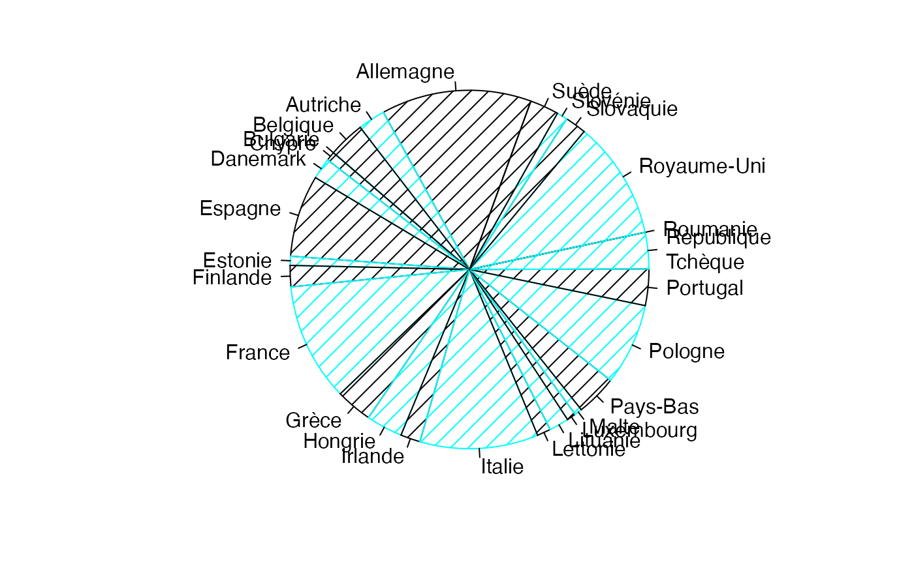
NameX <- Sieges_Voix$Etats.Membres
par(mar = c(2, 2, 1, 1) + 0.1, mgp = c(2, 1, 0))
pie(NombreVoix,labels=NameX,col=c("black","#00FFFF","black","#00FFFF"),init.angle = 0,density = 10,border=c("black","#00FFFF","black","#00FFFF"),cex=1)#,density = c(4*(4:1))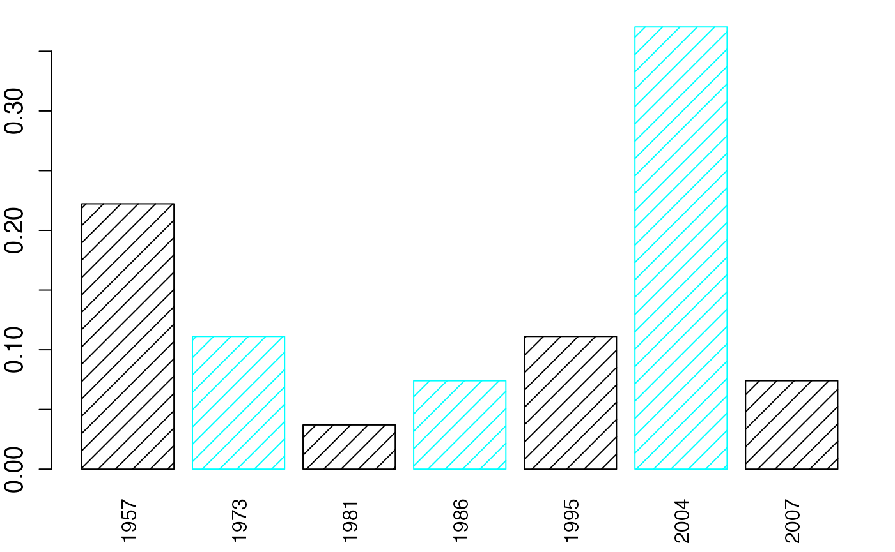
Europe Emploi Salariés
BàM
head(europe)
#> [[1]]
#> NULL
#>
#> $Durée
#> [1] 40.2 41.1 39.1 40.7 41.2 40.4 37.6 39.6 40.2 39.4 39.1 40.7 40.4 39.4 43.4
#> [16] 39.0 40.2 39.9 40.2 41.6 41.3 44.6 38.4 38.9 40.8 40.8 40.6 42.0 42.8 40.5
#> [31] 40.7 39.9 41.8 40.7 48.1
str(europe)
#> List of 2
#> $ : NULL
#> $ Durée: num [1:35] 40.2 41.1 39.1 40.7 41.2 40.4 37.6 39.6 40.2 39.4 ...
summary(europe$Durée)
#> Min. 1st Qu. Median Mean 3rd Qu. Max.
#> 37.60 39.75 40.50 40.72 41.15 48.10
range(europe$Durée)
#> [1] 37.6 48.1
sd(europe$Durée)
#> [1] 1.873984
qts <- quantile(europe$Durée,c(.25,.5,.75),type=6)
ltms <- c(qts[1]-3/2*(qts[3]-qts[1]),qts[3]+3/2*(qts[3]-qts[1]))
lms <- c(min(europe$Durée[europe$Durée>=qts[1]-3/2*(qts[3]-qts[1])]),max(europe$Durée[europe$Durée<=qts[3]+3/2*(qts[3]-qts[1])]))
conf <- qts[2] + c(-1.58, 1.58) * (qts[3]-qts[1])/sqrt(sum(!is.na(europe$Durée)))
extremes <- c(
europe$Durée[!(europe$Durée>=qts[1]-3/2*(qts[3]-qts[1]))],
europe$Durée[!(europe$Durée<=qts[3]+3/2*(qts[3]-qts[1]))]
)
#bltr
oldpar <- par()
par(mar = c(0.2, 3, 0.2, 0.2) + 0.1, mgp = c(2, 1, 0))
bxp(list(stats=t(t(c(lms[1],qts,lms[2]))),n=sum(!is.na(europe$Durée)),conf=matrix(conf,ncol=1)),ylab="Durée (heures)",lwd=2.5,cex.axis=1,cex.lab=1,ylim=range(europe$Durée))
points(1,mean(europe$Durée),pch=2,lwd=2.5,cex=1.25)
points(rep(1,length(extremes)),extremes,pch=8,cex=1.25,lwd=2.5)
Stats descp
mean(europe$Durée)
#> [1] 40.72286
quantile(europe$Durée,probs=c(.25,.5,.75),type=6)
#> 25% 50% 75%
#> 39.6 40.5 41.2
range(europe$Durée)
#> [1] 37.6 48.1
diff(quantile(europe$Durée,probs=c(.25,.75),type=6))
#> 75%
#> 1.6
diff(range(europe$Durée))
#> [1] 10.5
1/length(europe$Durée)*sum((europe$Durée-mean(europe$Durée))^2)
#> [1] 3.411478
sqrt(1/length(europe$Durée)*sum((europe$Durée-mean(europe$Durée))^2))
#> [1] 1.847019
sqrt(1/length(europe$Durée)*sum((europe$Durée-mean(europe$Durée))^2))/mean(europe$Durée)*100
#> [1] 4.535582
mean(sort(abs(europe$Durée-mean(sort(europe$Durée)[c(14)])))[c(14)])
#> [1] 0.5
1/length(europe$Durée)*sum((europe$Durée-mean(europe$Durée))^3)/((1/length(europe$Durée)*sum((europe$Durée-mean(europe$Durée))^2))^(3/2))
#> [1] 1.912403
(1/length(europe$Durée)*sum((europe$Durée-mean(europe$Durée))^3)/((1/length(europe$Durée)*sum((europe$Durée-mean(europe$Durée))^2))^(3/2)))^2
#> [1] 3.657286
1/length(europe$Durée)*sum((europe$Durée-mean(europe$Durée))^4)/((1/length(europe$Durée)*sum((europe$Durée-mean(europe$Durée))^2))^(4/2))
#> [1] 8.419112
1/length(europe$Durée)*sum((europe$Durée-mean(europe$Durée))^4)/((1/length(europe$Durée)*sum((europe$Durée-mean(europe$Durée))^2))^(4/2))-3
#> [1] 5.419112Europe Emploi Non-Salariés
BàM
head(europe)
#> [[1]]
#> NULL
#>
#> $Durée
#> [1] 47.6 51.2 52.5 43.0 44.9 44.6 46.3 47.0 43.2 46.4 50.1 50.4 41.5 49.4 48.5
#> [16] 46.0 41.5 40.6 46.9 45.3 47.4 48.3 45.0 47.9 45.7 47.6 38.9 45.2 51.2 45.1
#> [31] 45.7 47.9 49.4 45.9 49.6
str(europe)
#> List of 2
#> $ : NULL
#> $ Durée: num [1:35] 47.6 51.2 52.5 43 44.9 44.6 46.3 47 43.2 46.4 ...
summary(europe$Durée)
#> Min. 1st Qu. Median Mean 3rd Qu. Max.
#> 38.90 45.05 46.40 46.51 48.40 52.50
range(europe$Durée)
#> [1] 38.9 52.5
sd(europe$Durée)
#> [1] 3.118912
qts <- quantile(europe$Durée,c(.25,.5,.75),type=6)
ltms <- c(qts[1]-3/2*(qts[3]-qts[1]),qts[3]+3/2*(qts[3]-qts[1]))
lms <- c(min(europe$Durée[europe$Durée>=qts[1]-3/2*(qts[3]-qts[1])]),max(europe$Durée[europe$Durée<=qts[3]+3/2*(qts[3]-qts[1])]))
conf <- qts[2] + c(-1.58, 1.58) * (qts[3]-qts[1])/sqrt(sum(!is.na(europe$Durée)))
extremes <- c(
europe$Durée[!(europe$Durée>=qts[1]-3/2*(qts[3]-qts[1]))],
europe$Durée[!(europe$Durée<=qts[3]+3/2*(qts[3]-qts[1]))]
)
#bltr
oldpar <- par()
par(mar = c(0.2, 3, 0.2, 0.2) + 0.1, mgp = c(2, 1, 0))
bxp(list(stats=t(t(c(lms[1],qts,lms[2]))),n=sum(!is.na(europe$Durée)),conf=matrix(conf,ncol=1)),ylab="Durée (heures)",lwd=2.5,cex.axis=1,cex.lab=1,ylim=range(europe$Durée))
points(1,mean(europe$Durée),pch=2,lwd=2.5,cex=1.25)
points(rep(1,length(extremes)),extremes,pch=8,cex=1.25,lwd=2.5)Stats descp
mean(europe$Durée)
#> [1] 46.50571
quantile(europe$Durée,probs=c(.25,.5,.75),type=6)
#> 25% 50% 75%
#> 45.0 46.4 48.5
range(europe$Durée)
#> [1] 38.9 52.5
diff(quantile(europe$Durée,probs=c(.25,.75),type=6))
#> 75%
#> 3.5
diff(range(europe$Durée))
#> [1] 13.6
1/length(europe$Durée)*sum((europe$Durée-mean(europe$Durée))^2)
#> [1] 9.449682
sqrt(1/length(europe$Durée)*sum((europe$Durée-mean(europe$Durée))^2))
#> [1] 3.074033
sqrt(1/length(europe$Durée)*sum((europe$Durée-mean(europe$Durée))^2))/mean(europe$Durée)*100
#> [1] 6.610012
mean(sort(abs(europe$Durée-mean(sort(europe$Durée)[c(14)])))[c(14)])
#> [1] 1.3
1/length(europe$Durée)*sum((europe$Durée-mean(europe$Durée))^3)/((1/length(europe$Durée)*sum((europe$Durée-mean(europe$Durée))^2))^(3/2))
#> [1] -0.3640395
(1/length(europe$Durée)*sum((europe$Durée-mean(europe$Durée))^3)/((1/length(europe$Durée)*sum((europe$Durée-mean(europe$Durée))^2))^(3/2)))^2
#> [1] 0.1325248
1/length(europe$Durée)*sum((europe$Durée-mean(europe$Durée))^4)/((1/length(europe$Durée)*sum((europe$Durée-mean(europe$Durée))^2))^(4/2))
#> [1] 2.896399
1/length(europe$Durée)*sum((europe$Durée-mean(europe$Durée))^4)/((1/length(europe$Durée)*sum((europe$Durée-mean(europe$Durée))^2))^(4/2))-3
#> [1] -0.1036008Europe Emploi Partiel_Ens
data(Europe)
europe <- vector("list",1)
europe$Durée <- Europe$Partiel_Ens
head(europe)
#> [[1]]
#> NULL
#>
#> $Durée
#> [1] 27.2 27.2 24.9 1.9 10.2 4.8 24.2 14.5 11.3 15.5 17.5 9.1 4.4 19.7 21.5
#> [16] 18.7 8.4 6.4 17.0 4.1 12.2 4.5 25.8 50.2 6.1 8.1 6.1 24.4 9.7 4.5
#> [31] 8.4 22.5 38.0 6.3 9.9
str(europe)
#> List of 2
#> $ : NULL
#> $ Durée: num [1:35] 27.2 27.2 24.9 1.9 10.2 4.8 24.2 14.5 11.3 15.5 ...
summary(europe)
#> Length Class Mode
#> 0 -none- NULL
#> Durée 35 -none- numeric
range(europe$Durée)
#> [1] 1.9 50.2
sd(europe$Durée)
#> [1] 10.71283
rangePartiel_Ens <-
cbind(range(Europe$Partiel_Ens),
range(Europe$Partiel_H),
range(Europe$Partiel_F))
ylimits = c(min(rangePartiel_Ens[1,]),
max(rangePartiel_Ens[2,]))BàM
qts <- quantile(europe$Durée,c(.25,.5,.75),type=6)
ltms <- c(qts[1]-3/2*(qts[3]-qts[1]),qts[3]+3/2*(qts[3]-qts[1]))
lms <- c(min(europe$Durée[europe$Durée>=qts[1]-3/2*(qts[3]-qts[1])]),max(europe$Durée[europe$Durée<=qts[3]+3/2*(qts[3]-qts[1])]))
conf <- qts[2] + c(-1.58, 1.58) * (qts[3]-qts[1])/sqrt(sum(!is.na(europe$Durée)))
#bltr
oldpar <- par()
par(mar = c(0.2, 3, 0.2, 0.2) + 0.1, mgp = c(2, 1, 0))
bxp(list(stats=t(t(c(lms[1],qts,lms[2]))),n=sum(!is.na(europe$Durée)),conf=matrix(conf,ncol=1)),ylab="% emploi total",lwd=2.5,cex.axis=1,cex.lab=1,ylim=range(europe$Durée))
points(1,mean(europe$Durée),pch=2,lwd=2.5,cex=1.25)
points(1,
c(
europe$Durée[!(europe$Durée>=qts[1]-3/2*(qts[3]-qts[1]))],
europe$Durée[!(europe$Durée<=qts[3]+3/2*(qts[3]-qts[1]))]
),pch=8,cex=1.25,lwd=2.5
)Stat Desc
mean(europe$Durée)
#> [1] 15.00571
quantile(europe$Durée,probs=c(.25,.5,.75),type=6)
#> 25% 50% 75%
#> 6.3 11.3 22.5
range(europe$Durée)
#> [1] 1.9 50.2
diff(quantile(europe$Durée,probs=c(.25,.75),type=6))
#> 75%
#> 16.2
diff(range(europe$Durée))
#> [1] 48.3
1/length(europe$Durée)*sum((europe$Durée-mean(europe$Durée))^2)
#> [1] 111.4857
sqrt(1/length(europe$Durée)*sum((europe$Durée-mean(europe$Durée))^2))
#> [1] 10.55868
sqrt(1/length(europe$Durée)*sum((europe$Durée-mean(europe$Durée))^2))/mean(europe$Durée)*100
#> [1] 70.36438
mean(sort(abs(europe$Durée-mean(sort(europe$Durée)[c(14)])))[c(14)])
#> [1] 4.3
1/length(europe$Durée)*sum((europe$Durée-mean(europe$Durée))^3)/((1/length(europe$Durée)*sum((europe$Durée-mean(europe$Durée))^2))^(3/2))
#> [1] 1.254157
(1/length(europe$Durée)*sum((europe$Durée-mean(europe$Durée))^3)/((1/length(europe$Durée)*sum((europe$Durée-mean(europe$Durée))^2))^(3/2)))^2
#> [1] 1.57291
1/length(europe$Durée)*sum((europe$Durée-mean(europe$Durée))^4)/((1/length(europe$Durée)*sum((europe$Durée-mean(europe$Durée))^2))^(4/2))
#> [1] 4.658759
1/length(europe$Durée)*sum((europe$Durée-mean(europe$Durée))^4)/((1/length(europe$Durée)*sum((europe$Durée-mean(europe$Durée))^2))^(4/2))-3
#> [1] 1.658759Europe Emploi Partiel_H
data(Europe)
europe <- vector("list",1)
europe$Durée <- Europe$Partiel_H
head(europe)
#> [[1]]
#> NULL
#>
#> $Durée
#> [1] 9.9 9.5 10.5 1.7 6.3 3.1 15.3 6.8 7.1 10.1 7.5 5.9 2.5 10.1 10.3
#> [16] 8.2 5.8 4.7 5.6 4.1 5.9 4.7 15.2 27.9 3.5 5.4 6.0 10.8 8.9 2.9
#> [31] 4.8 13.4 17.1 2.8 6.6
str(europe)
#> List of 2
#> $ : NULL
#> $ Durée: num [1:35] 9.9 9.5 10.5 1.7 6.3 3.1 15.3 6.8 7.1 10.1 ...
summary(europe)
#> Length Class Mode
#> 0 -none- NULL
#> Durée 35 -none- numeric
range(europe$Durée)
#> [1] 1.7 27.9
sd(europe$Durée)
#> [1] 5.144977BàM
qts <- quantile(europe$Durée,c(.25,.5,.75),type=6)
ltms <- c(qts[1]-3/2*(qts[3]-qts[1]),qts[3]+3/2*(qts[3]-qts[1]))
lms <- c(min(europe$Durée[europe$Durée>=qts[1]-3/2*(qts[3]-qts[1])]),max(europe$Durée[europe$Durée<=qts[3]+3/2*(qts[3]-qts[1])]))
conf <- qts[2] + c(-1.58, 1.58) * (qts[3]-qts[1])/sqrt(sum(!is.na(europe$Durée)))
#bltr
oldpar <- par()
par(mar = c(0.2, 3, 0.2, 0.2) + 0.1, mgp = c(2, 1, 0))
bxp(list(stats=t(t(c(lms[1],qts,lms[2]))),n=sum(!is.na(europe$Durée)),conf=matrix(conf,ncol=1)),ylab="% emploi total",lwd=2.5,cex.axis=1,cex.lab=1,ylim=range(europe$Durée))
points(1,mean(europe$Durée),pch=2,lwd=2.5,cex=1.25)
points(1,
c(
europe$Durée[!(europe$Durée>=qts[1]-3/2*(qts[3]-qts[1]))],
europe$Durée[!(europe$Durée<=qts[3]+3/2*(qts[3]-qts[1]))]
),pch=8,cex=1.25,lwd=2.5
)Stat Desc
mean(europe$Durée)
#> [1] 8.025714
quantile(europe$Durée,probs=c(.25,.5,.75),type=6)
#> 25% 50% 75%
#> 4.7 6.6 10.1
range(europe$Durée)
#> [1] 1.7 27.9
diff(quantile(europe$Durée,probs=c(.25,.75),type=6))
#> 75%
#> 5.4
diff(range(europe$Durée))
#> [1] 26.2
1/length(europe$Durée)*sum((europe$Durée-mean(europe$Durée))^2)
#> [1] 25.71448
sqrt(1/length(europe$Durée)*sum((europe$Durée-mean(europe$Durée))^2))
#> [1] 5.070945
sqrt(1/length(europe$Durée)*sum((europe$Durée-mean(europe$Durée))^2))/mean(europe$Durée)*100
#> [1] 63.18372
mean(sort(abs(europe$Durée-mean(sort(europe$Durée)[c(14)])))[c(14)])
#> [1] 1.6
1/length(europe$Durée)*sum((europe$Durée-mean(europe$Durée))^3)/((1/length(europe$Durée)*sum((europe$Durée-mean(europe$Durée))^2))^(3/2))
#> [1] 1.845463
(1/length(europe$Durée)*sum((europe$Durée-mean(europe$Durée))^3)/((1/length(europe$Durée)*sum((europe$Durée-mean(europe$Durée))^2))^(3/2)))^2
#> [1] 3.405734
1/length(europe$Durée)*sum((europe$Durée-mean(europe$Durée))^4)/((1/length(europe$Durée)*sum((europe$Durée-mean(europe$Durée))^2))^(4/2))
#> [1] 7.561845
1/length(europe$Durée)*sum((europe$Durée-mean(europe$Durée))^4)/((1/length(europe$Durée)*sum((europe$Durée-mean(europe$Durée))^2))^(4/2))-3
#> [1] 4.561845Europe Emploi Partiel_F
data(Europe)
europe <- vector("list",1)
europe$Durée <- Europe$Partiel_F
head(europe)
#> [[1]]
#> NULL
#>
#> $Durée
#> [1] 46.7 47.1 41.0 2.1 14.6 6.7 33.9 23.7 15.9 21.3 28.0 13.5 6.8 30.6 34.1
#> [16] 32.9 10.9 8.0 30.4 4.3 21.4 4.1 37.7 75.2 9.3 10.9 6.2 39.4 10.6 6.5
#> [31] 12.7 32.5 61.7 10.6 17.0
str(europe)
#> List of 2
#> $ : NULL
#> $ Durée: num [1:35] 46.7 47.1 41 2.1 14.6 6.7 33.9 23.7 15.9 21.3 ...
summary(europe)
#> Length Class Mode
#> 0 -none- NULL
#> Durée 35 -none- numeric
range(europe$Durée)
#> [1] 2.1 75.2
sd(europe$Durée)
#> [1] 17.43912BàM
qts <- quantile(europe$Durée,c(.25,.5,.75),type=6)
ltms <- c(qts[1]-3/2*(qts[3]-qts[1]),qts[3]+3/2*(qts[3]-qts[1]))
lms <- c(min(europe$Durée[europe$Durée>=qts[1]-3/2*(qts[3]-qts[1])]),max(europe$Durée[europe$Durée<=qts[3]+3/2*(qts[3]-qts[1])]))
conf <- qts[2] + c(-1.58, 1.58) * (qts[3]-qts[1])/sqrt(sum(!is.na(europe$Durée)))
#bltr
oldpar <- par()
par(mar = c(0.2, 3, 0.2, 0.2) + 0.1, mgp = c(2, 1, 0))
bxp(list(stats=t(t(c(lms[1],qts,lms[2]))),n=sum(!is.na(europe$Durée)),conf=matrix(conf,ncol=1)),ylab="% emploi total",lwd=2.5,cex.axis=1,cex.lab=1,ylim=range(europe$Durée))
points(1,mean(europe$Durée),pch=2,lwd=2.5,cex=1.25)
points(1,
c(
europe$Durée[!(europe$Durée>=qts[1]-3/2*(qts[3]-qts[1]))],
europe$Durée[!(europe$Durée<=qts[3]+3/2*(qts[3]-qts[1]))]
),pch=8,cex=1.25,lwd=2.5
)Stat Desc
mean(europe$Durée)
#> [1] 23.09429
quantile(europe$Durée,probs=c(.25,.5,.75),type=6)
#> 25% 50% 75%
#> 9.3 17.0 33.9
range(europe$Durée)
#> [1] 2.1 75.2
diff(quantile(europe$Durée,probs=c(.25,.75),type=6))
#> 75%
#> 24.6
diff(range(europe$Durée))
#> [1] 73.1
1/length(europe$Durée)*sum((europe$Durée-mean(europe$Durée))^2)
#> [1] 295.4337
sqrt(1/length(europe$Durée)*sum((europe$Durée-mean(europe$Durée))^2))
#> [1] 17.18818
sqrt(1/length(europe$Durée)*sum((europe$Durée-mean(europe$Durée))^2))/mean(europe$Durée)*100
#> [1] 74.42614
mean(sort(abs(europe$Durée-mean(sort(europe$Durée)[c(14)])))[c(14)])
#> [1] 6.2
1/length(europe$Durée)*sum((europe$Durée-mean(europe$Durée))^3)/((1/length(europe$Durée)*sum((europe$Durée-mean(europe$Durée))^2))^(3/2))
#> [1] 1.051022
(1/length(europe$Durée)*sum((europe$Durée-mean(europe$Durée))^3)/((1/length(europe$Durée)*sum((europe$Durée-mean(europe$Durée))^2))^(3/2)))^2
#> [1] 1.104648
1/length(europe$Durée)*sum((europe$Durée-mean(europe$Durée))^4)/((1/length(europe$Durée)*sum((europe$Durée-mean(europe$Durée))^2))^(4/2))
#> [1] 3.753343
1/length(europe$Durée)*sum((europe$Durée-mean(europe$Durée))^4)/((1/length(europe$Durée)*sum((europe$Durée-mean(europe$Durée))^2))^(4/2))-3
#> [1] 0.753343Partiel Ensemble
data(Europe)
var1<- Europe$Partiel_Ens
varN <- "_Ens"
xi <- unique(sort(var1))
ni <- as.vector(table(var1))
data2 <- cbind(xi,ni)batoneffnew
oldpar <- par()
par(mar = c(2, 2, 1, 1) + 0.1, mgp=c(2,1,0))
plot(xi,ni,type='h',xlab="",ylab="",lwd=2,ylim=c(0,max(ni))) #,xaxt="n"
#axis(1, at = 1:6, labels = c(1:5,6))
#axis(1, at = 1:6, labels = c(1:5,"6 et plus"))
#suppressWarnings(par(oldpar))batonfrenew
oldpar <- par()
par(mar = c(2, 2, 1, 1) + 0.1, mgp=c(2,1,0))
plot(xi,ni/sum(ni),type='h',xlab="",ylab="",lwd=2,ylim=c(0,max(ni/sum(ni)))) #,xaxt="n"
#suppressWarnings(par(oldpar))polyeffnew
oldpar <- par()
par(mar = c(2, 2, 1, 1) + 0.1, mgp=c(2,1,0))
plot(xi,ni,type='h',xlab="",ylab="",lwd=2,ylim=c(0,max(ni))) #,xaxt="n"
segments(xi[-length(xi)],ni[-length(xi)],xi[-1],ni[-1],lwd=2,col="#00FFFF")
#suppressWarnings(par(oldpar))polyfrenew
oldpar <- par()
par(mar = c(2, 2, 1, 1) + 0.1, mgp=c(2,1,0))
plot(xi,ni/sum(ni),type='h',xlab="",ylab="",lwd=2,ylim=c(0,max(ni/sum(ni))))
segments(xi[-length(xi)],ni[-length(xi)]/sum(ni),xi[-1],ni[-1]/sum(ni),lwd=2,col="#00FFFF")
#suppressWarnings(par(oldpar))polyeffcumnew
nisum <- rep(ni[1],length(ni))
for (iii in 2:length(ni))
{
nisum[iii] <- nisum[iii-1]+ni[iii]
}
oldpar <- par()
par(mar = c(2, 2, 1, 1) + 0.1, mgp=c(2,1,0))
plot(xi,nisum,type='h',xlab="",ylab="",lwd=2,ylim=c(0,max(nisum))) #,xaxt="n"
segments(xi[-length(xi)],nisum[-length(xi)],xi[-1],nisum[-1],lwd=2,col="#00FFFF")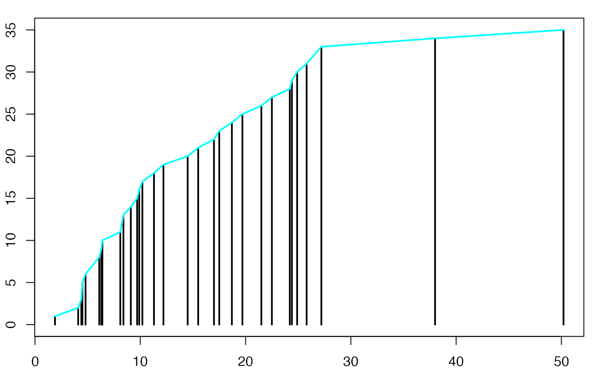
#suppressWarnings(par(oldpar))frecumnew
oldpar <- par()
par(mar = c(2, 2, 1, 1) + 0.1, mgp=c(2,1,0))
plot(xi,nisum/sum(ni),type='h',xlab="",ylab="",lwd=2,ylim=c(0,max(nisum/sum(ni)))) #,xaxt="n"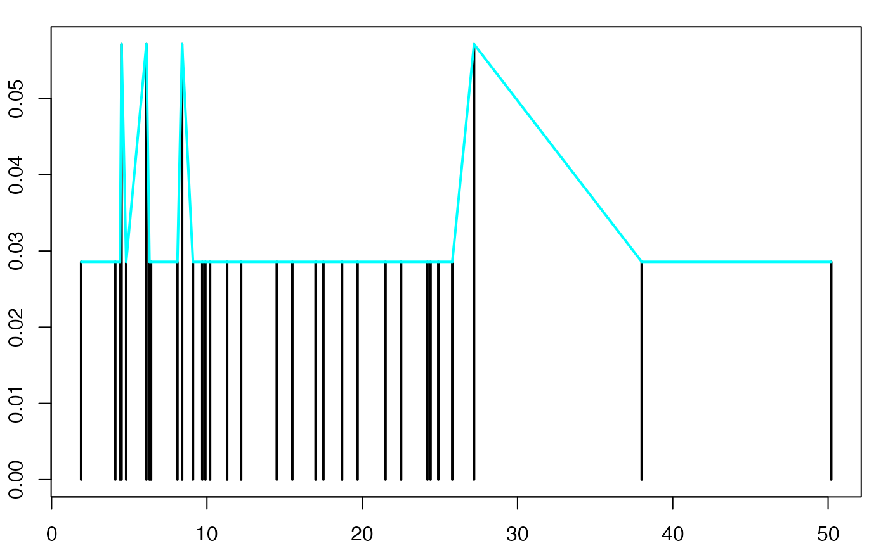
#suppressWarnings(par(oldpar))effcumnew
oldpar <- par()
par(mar = c(2, 2, 1, 1) + 0.1, mgp=c(2,1,0))
plot(xi,nisum,type='h',xlab="",ylab="",lwd=2,ylim=c(0,max(nisum))) #,xaxt="n"
#suppressWarnings(par(oldpar))histofrenew
oldpar <- par()
par(mar = c(2, 2, 1, 1) + 0.1, mgp=c(2,1,0))
histofre <- hist(data3,breaks=breaks0,main="",freq=F,xlab="",ylab="",lwd=2,density=10)
#suppressWarnings(par(oldpar))histopolfrenew
oldpar <- par()
par(mar = c(2, 2, 1, 1) + 0.1, mgp=c(2,1,0))
histofre <- hist(data3,breaks=breaks0,main="",freq=F,xlab="",ylab="",lwd=2,density=10)
segments(histofre$mids[-(length(breaks0)-1)],histofre$density[-(length(breaks0)-1)],histofre$mids[-1],histofre$density[-1],lwd=2,col="#00FFFF")
#suppressWarnings(par(oldpar))histofrecumnew
data4 <- rep((breaks0[-length(breaks0)]+diff(breaks0)/2),cumsum(table(cut(var1,breaks0))))
table(data4)
#> data4
#> 5 15 25 35 45
#> 16 25 33 34 34
oldpar <- par()
par(mar = c(2, 2, 1, 1) + 0.1, mgp=c(2,1,0))
histofrecum <- hist(data4,breaks=breaks0,main="",freq=F,xlab="",ylab="",lwd=2,yaxt="n",density=10)
axis(2,at=c(0,.2,.4,.6,.8,1)*max(histofrecum$dens),labels=c(0,.2,.4,.6,.8,1),lwd=2)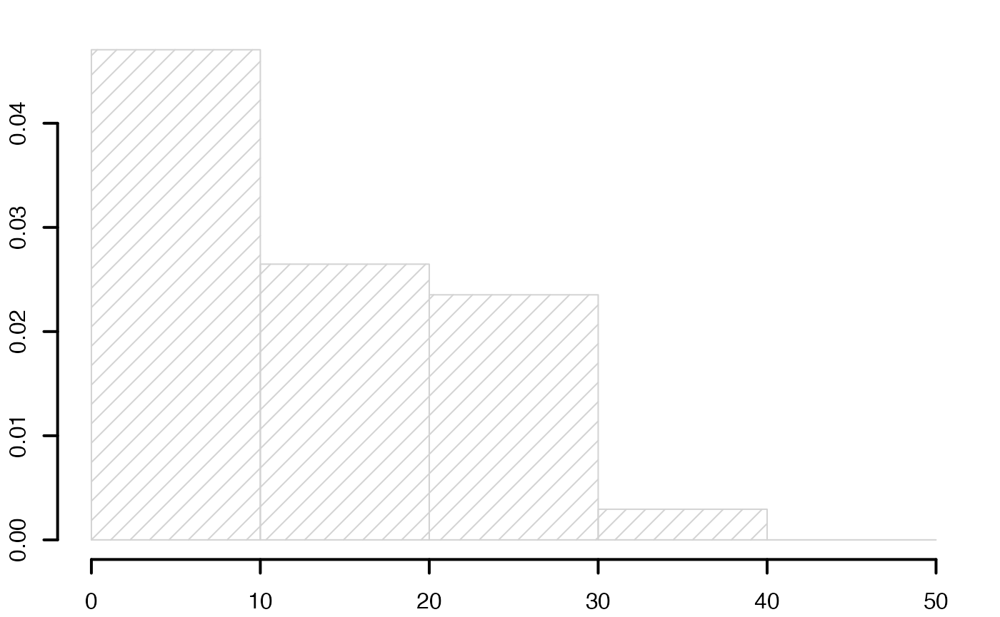
#suppressWarnings(par(oldpar))histopolfrecumnew
oldpar <- par()
par(mar = c(2, 2, 1, 1) + 0.1, mgp=c(2,1,0))
histofrecum <- hist(data4,breaks=breaks0,main="",freq=F,xlab="",ylab="",lwd=2,yaxt="n",density=10)
segments(histofrecum$mids[-(length(breaks0)-1)],histofrecum$density[-(length(breaks0)-1)],histofrecum$mids[-1],histofrecum$density[-1],lwd=2,col="#00FFFF")
axis(2,at=c(0,.2,.4,.6,.8,1)*max(histofrecum$dens),labels=c(0,.2,.4,.6,.8,1),lwd=2)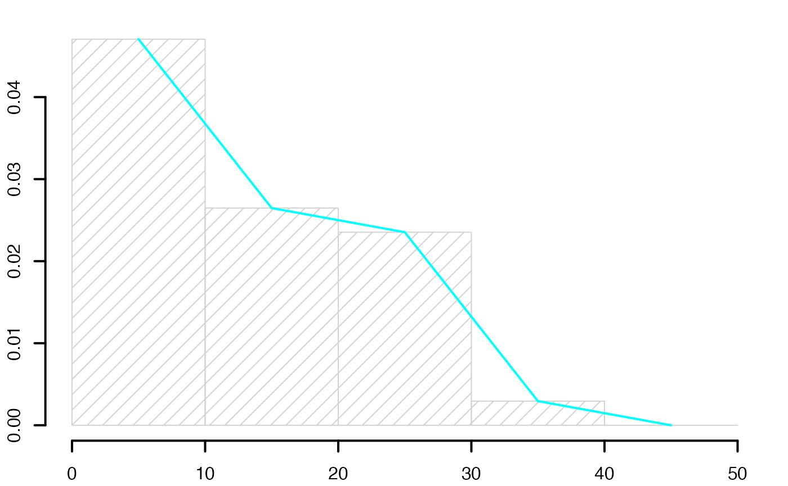
#suppressWarnings(par(oldpar))histopoleffcumnew
oldpar <- par()
par(mar = c(2, 2, 1, 1) + 0.1, mgp=c(2,1,0))
histoeffcum <- hist(data4,breaks=breaks0,main="",freq=T,xlab="",ylab="",lwd=2,density=10) #,yaxt="n"
segments(histoeffcum$mids[-(length(breaks0)-1)],histoeffcum$counts[-(length(breaks0)-1)],histoeffcum$mids[-1],histoeffcum$counts[-1],lwd=2,col="#00FFFF")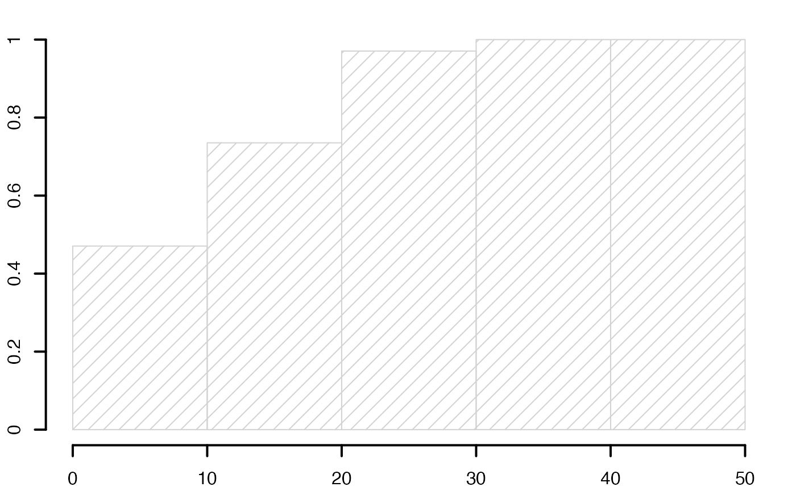
#axis(2,at=c(0,.2,.4,.6,.8,1)*length(data3),labels=c(0,.2,.4,.6,.8,1)*length(data3),lwd=2)
#suppressWarnings(par(oldpar))Partiel Hommes
data(Europe)
var1<- Europe$Partiel_H
varN <- "_H"
xi <- unique(sort(var1))
ni <- as.vector(table(var1))
data2 <- cbind(xi,ni)batoneffnew
oldpar <- par()
par(mar = c(2, 2, 1, 1) + 0.1, mgp=c(2,1,0))
plot(xi,ni,type='h',xlab="",ylab="",lwd=2,ylim=c(0,max(ni))) #,xaxt="n"
#axis(1, at = 1:6, labels = c(1:5,6))
#axis(1, at = 1:6, labels = c(1:5,"6 et plus"))
#suppressWarnings(par(oldpar))batonfrenew
oldpar <- par()
par(mar = c(2, 2, 1, 1) + 0.1, mgp=c(2,1,0))
plot(xi,ni/sum(ni),type='h',xlab="",ylab="",lwd=2,ylim=c(0,max(ni/sum(ni)))) #,xaxt="n"
#suppressWarnings(par(oldpar))polyeffnew
oldpar <- par()
par(mar = c(2, 2, 1, 1) + 0.1, mgp=c(2,1,0))
plot(xi,ni,type='h',xlab="",ylab="",lwd=2,ylim=c(0,max(ni))) #,xaxt="n"
segments(xi[-length(xi)],ni[-length(xi)],xi[-1],ni[-1],lwd=2,col="#00FFFF")
#suppressWarnings(par(oldpar))polyfrenew
oldpar <- par()
par(mar = c(2, 2, 1, 1) + 0.1, mgp=c(2,1,0))
plot(xi,ni/sum(ni),type='h',xlab="",ylab="",lwd=2,ylim=c(0,max(ni/sum(ni))))
segments(xi[-length(xi)],ni[-length(xi)]/sum(ni),xi[-1],ni[-1]/sum(ni),lwd=2,col="#00FFFF")
#suppressWarnings(par(oldpar))polyeffcumnew
nisum <- rep(ni[1],length(ni))
for (iii in 2:length(ni))
{
nisum[iii] <- nisum[iii-1]+ni[iii]
}
oldpar <- par()
par(mar = c(2, 2, 1, 1) + 0.1, mgp=c(2,1,0))
plot(xi,nisum,type='h',xlab="",ylab="",lwd=2,ylim=c(0,max(nisum))) #,xaxt="n"
segments(xi[-length(xi)],nisum[-length(xi)],xi[-1],nisum[-1],lwd=2,col="#00FFFF")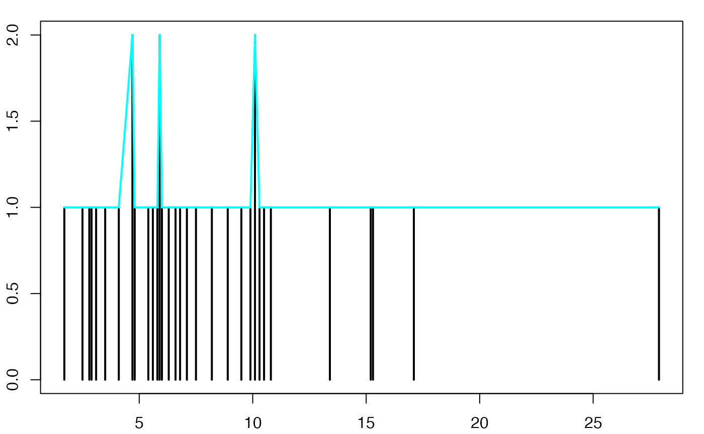
#suppressWarnings(par(oldpar))frecumnew
oldpar <- par()
par(mar = c(2, 2, 1, 1) + 0.1, mgp=c(2,1,0))
plot(xi,nisum/sum(ni),type='h',xlab="",ylab="",lwd=2,ylim=c(0,max(nisum/sum(ni)))) #,xaxt="n"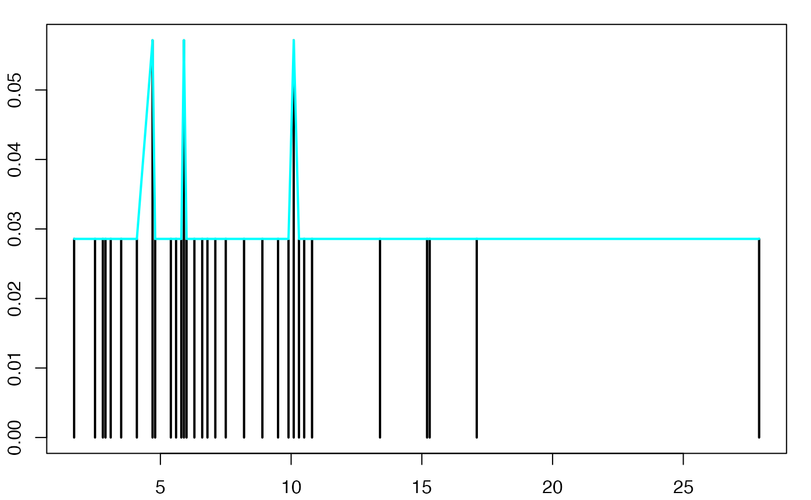
#suppressWarnings(par(oldpar))effcumnew
oldpar <- par()
par(mar = c(2, 2, 1, 1) + 0.1, mgp=c(2,1,0))
plot(xi,nisum,type='h',xlab="",ylab="",lwd=2,ylim=c(0,max(nisum))) #,xaxt="n"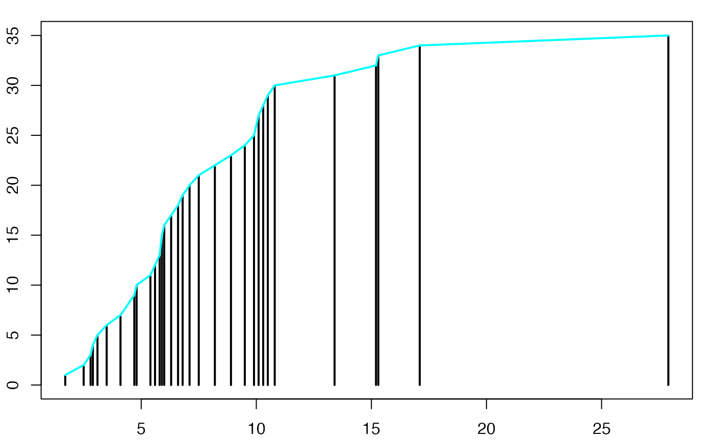
#suppressWarnings(par(oldpar))histofrenew
oldpar <- par()
par(mar = c(2, 2, 1, 1) + 0.1, mgp=c(2,1,0))
histofre <- hist(data3,breaks=breaks0,main="",freq=F,xlab="",ylab="",lwd=2,density=10)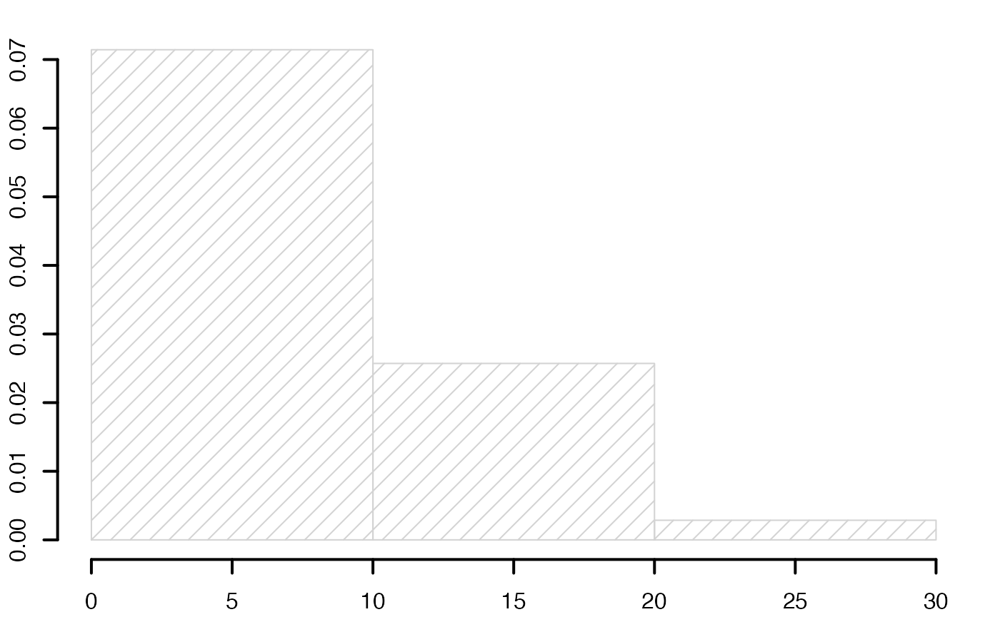
#suppressWarnings(par(oldpar))histopolfrenew
oldpar <- par()
par(mar = c(2, 2, 1, 1) + 0.1, mgp=c(2,1,0))
histofre <- hist(data3,breaks=breaks0,main="",freq=F,xlab="",ylab="",lwd=2,density=10)
segments(histofre$mids[-(length(breaks0)-1)],histofre$density[-(length(breaks0)-1)],histofre$mids[-1],histofre$density[-1],lwd=2,col="#00FFFF")
#suppressWarnings(par(oldpar))histofrecumnew
data4 <- rep((breaks0[-length(breaks0)]+diff(breaks0)/2)
,cumsum(table(cut(var1,breaks0))))
table(data4)
#> data4
#> 5 15 25
#> 25 34 35
oldpar <- par()
par(mar = c(2, 2, 1, 1) + 0.1, mgp=c(2,1,0))
histofrecum <- hist(data4,breaks=breaks0,main="",freq=F,xlab="",ylab="",lwd=2,yaxt="n",density=10)
axis(2,at=c(0,.2,.4,.6,.8,1)*max(histofrecum$dens),labels=c(0,.2,.4,.6,.8,1),lwd=2)
#suppressWarnings(par(oldpar))histopolfrecumnew
oldpar <- par()
par(mar = c(2, 2, 1, 1) + 0.1, mgp=c(2,1,0))
histofrecum <- hist(data4,breaks=breaks0,main="",freq=F,xlab="",ylab="",lwd=2,yaxt="n",density=10)
segments(histofrecum$mids[-(length(breaks0)-1)],histofrecum$density[-(length(breaks0)-1)],histofrecum$mids[-1],histofrecum$density[-1],lwd=2,col="#00FFFF")
axis(2,at=c(0,.2,.4,.6,.8,1)*max(histofrecum$dens),labels=c(0,.2,.4,.6,.8,1),lwd=2)
#suppressWarnings(par(oldpar))histopoleffcumnew
oldpar <- par()
par(mar = c(2, 2, 1, 1) + 0.1, mgp=c(2,1,0))
histoeffcum <- hist(data4,breaks=breaks0,main="",freq=T,xlab="",ylab="",lwd=2,density=10) #,yaxt="n"
segments(histoeffcum$mids[-(length(breaks0)-1)],histoeffcum$counts[-(length(breaks0)-1)],histoeffcum$mids[-1],histoeffcum$counts[-1],lwd=2,col="#00FFFF")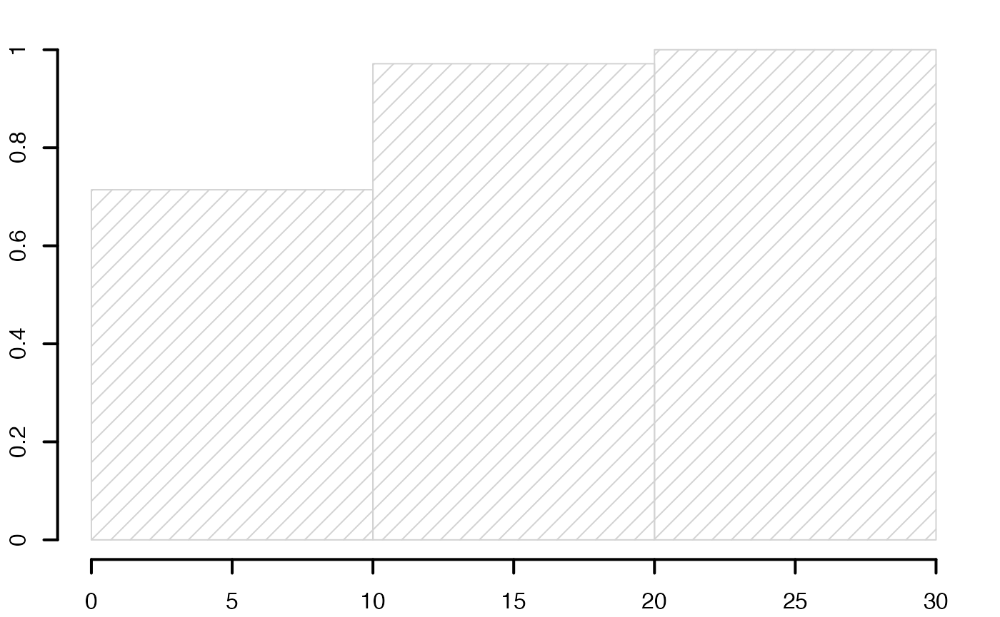
#axis(2,at=c(0,.2,.4,.6,.8,1)*length(data3),labels=c(0,.2,.4,.6,.8,1)*length(data3),lwd=2)
#suppressWarnings(par(oldpar))Partiel Femmes
data(Europe)
var1<- Europe$Partiel_F
varN <- "_F"
xi <- unique(sort(var1))
ni <- as.vector(table(var1))
data2 <- cbind(xi,ni)batoneffnew
oldpar <- par()
par(mar = c(2, 2, 1, 1) + 0.1, mgp=c(2,1,0))
plot(xi,ni,type='h',xlab="",ylab="",lwd=2,ylim=c(0,max(ni))) #,xaxt="n"
#axis(1, at = 1:6, labels = c(1:5,6))
#axis(1, at = 1:6, labels = c(1:5,"6 et plus"))
#suppressWarnings(par(oldpar))batonfrenew
oldpar <- par()
par(mar = c(2, 2, 1, 1) + 0.1, mgp=c(2,1,0))
plot(xi,ni/sum(ni),type='h',xlab="",ylab="",lwd=2,ylim=c(0,max(ni/sum(ni)))) #,xaxt="n"
#suppressWarnings(par(oldpar))polyeffnew
oldpar <- par()
par(mar = c(2, 2, 1, 1) + 0.1, mgp=c(2,1,0))
plot(xi,ni,type='h',xlab="",ylab="",lwd=2,ylim=c(0,max(ni))) #,xaxt="n"
segments(xi[-length(xi)],ni[-length(xi)],xi[-1],ni[-1],lwd=2,col="#00FFFF")
#suppressWarnings(par(oldpar))polyfrenew
oldpar <- par()
par(mar = c(2, 2, 1, 1) + 0.1, mgp=c(2,1,0))
plot(xi,ni/sum(ni),type='h',xlab="",ylab="",lwd=2,ylim=c(0,max(ni/sum(ni))))
segments(xi[-length(xi)],ni[-length(xi)]/sum(ni),xi[-1],ni[-1]/sum(ni),lwd=2,col="#00FFFF")
#suppressWarnings(par(oldpar))polyeffcumnew
nisum <- rep(ni[1],length(ni))
for (iii in 2:length(ni))
{
nisum[iii] <- nisum[iii-1]+ni[iii]
}
oldpar <- par()
par(mar = c(2, 2, 1, 1) + 0.1, mgp=c(2,1,0))
plot(xi,nisum,type='h',xlab="",ylab="",lwd=2,ylim=c(0,max(nisum))) #,xaxt="n"
segments(xi[-length(xi)],nisum[-length(xi)],xi[-1],nisum[-1],lwd=2,col="#00FFFF")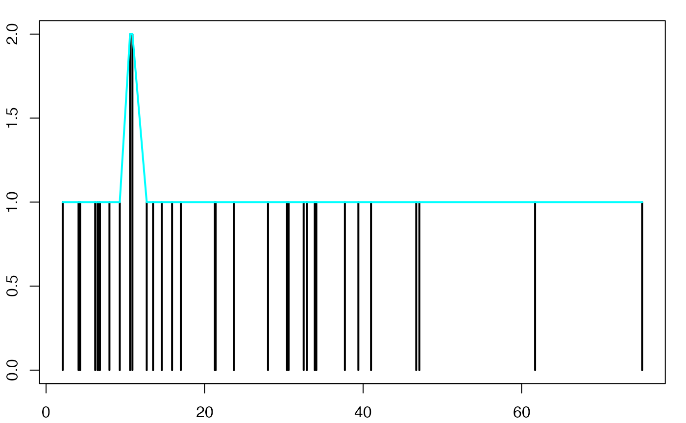
#suppressWarnings(par(oldpar))frecumnew
oldpar <- par()
par(mar = c(2, 2, 1, 1) + 0.1, mgp=c(2,1,0))
plot(xi,nisum/sum(ni),type='h',xlab="",ylab="",lwd=2,ylim=c(0,max(nisum/sum(ni)))) #,xaxt="n"
#suppressWarnings(par(oldpar))effcumnew
oldpar <- par()
par(mar = c(2, 2, 1, 1) + 0.1, mgp=c(2,1,0))
plot(xi,nisum,type='h',xlab="",ylab="",lwd=2,ylim=c(0,max(nisum))) #,xaxt="n"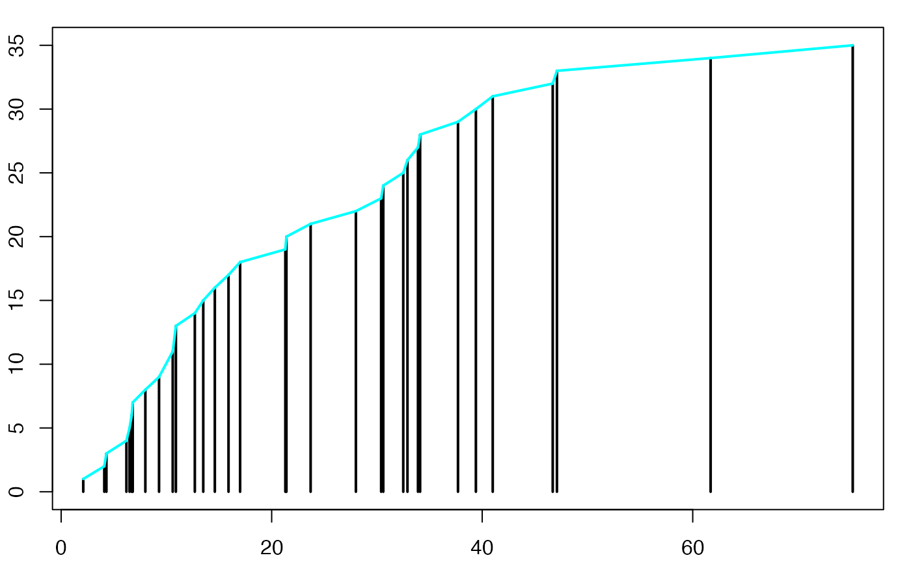
#suppressWarnings(par(oldpar))histofrenew
oldpar <- par()
par(mar = c(2, 2, 1, 1) + 0.1, mgp=c(2,1,0))
histofre <- hist(data3,breaks=breaks0,main="",freq=F,xlab="",ylab="",lwd=2,density=10)
#suppressWarnings(par(oldpar))histopolfrenew
oldpar <- par()
par(mar = c(2, 2, 1, 1) + 0.1, mgp=c(2,1,0))
histofre <- hist(data3,breaks=breaks0,main="",freq=F,xlab="",ylab="",lwd=2,density=10)
segments(histofre$mids[-(length(breaks0)-1)],histofre$density[-(length(breaks0)-1)],histofre$mids[-1],histofre$density[-1],lwd=2,col="#00FFFF")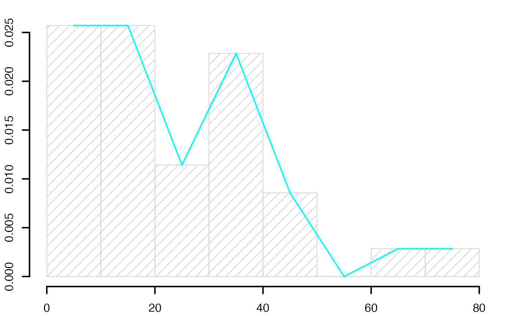
#suppressWarnings(par(oldpar))histofrecumnew
data4 <- rep((breaks0[-length(breaks0)]+diff(breaks0)/2)
,cumsum(table(cut(var1,breaks0))))
table(data4)
#> data4
#> 5 15 25 35 45 55 65 75
#> 9 18 22 30 33 33 34 35
oldpar <- par()
par(mar = c(2, 2, 1, 1) + 0.1, mgp=c(2,1,0))
histofrecum <- hist(data4,breaks=breaks0,main="",freq=F,xlab="",ylab="",lwd=2,yaxt="n",density=10)
axis(2,at=c(0,.2,.4,.6,.8,1)*max(histofrecum$dens),labels=c(0,.2,.4,.6,.8,1),lwd=2)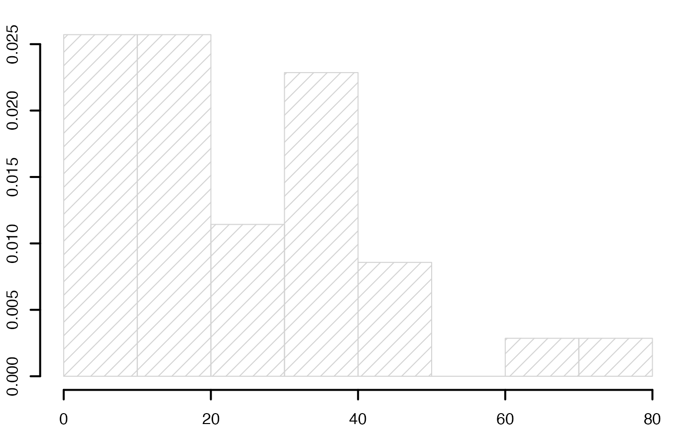
#suppressWarnings(par(oldpar))histopolfrecumnew
oldpar <- par()
par(mar = c(2, 2, 1, 1) + 0.1, mgp=c(2,1,0))
histofrecum <- hist(data4,breaks=breaks0,main="",freq=F,xlab="",ylab="",lwd=2,yaxt="n",density=10)
segments(histofrecum$mids[-(length(breaks0)-1)],histofrecum$density[-(length(breaks0)-1)],histofrecum$mids[-1],histofrecum$density[-1],lwd=2,col="#00FFFF")
axis(2,at=c(0,.2,.4,.6,.8,1)*max(histofrecum$dens),labels=c(0,.2,.4,.6,.8,1),lwd=2)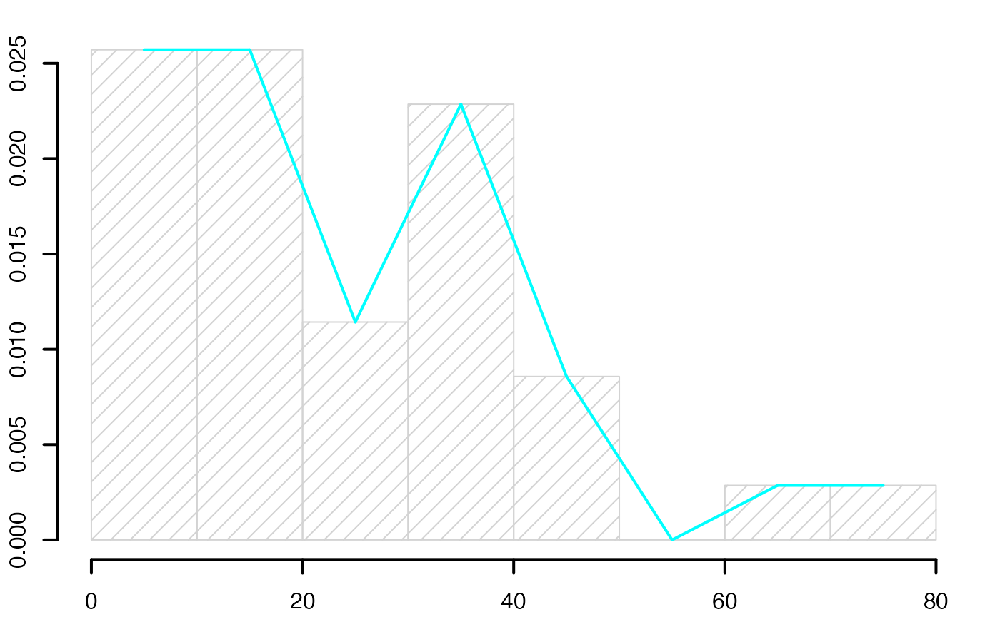
#suppressWarnings(par(oldpar))histopoleffcumnew
oldpar <- par()
par(mar = c(2, 2, 1, 1) + 0.1, mgp=c(2,1,0))
histoeffcum <- hist(data4,breaks=breaks0,main="",freq=T,xlab="",ylab="",lwd=2,density=10) #,yaxt="n"
segments(histoeffcum$mids[-(length(breaks0)-1)],histoeffcum$counts[-(length(breaks0)-1)],histoeffcum$mids[-1],histoeffcum$counts[-1],lwd=2,col="#00FFFF")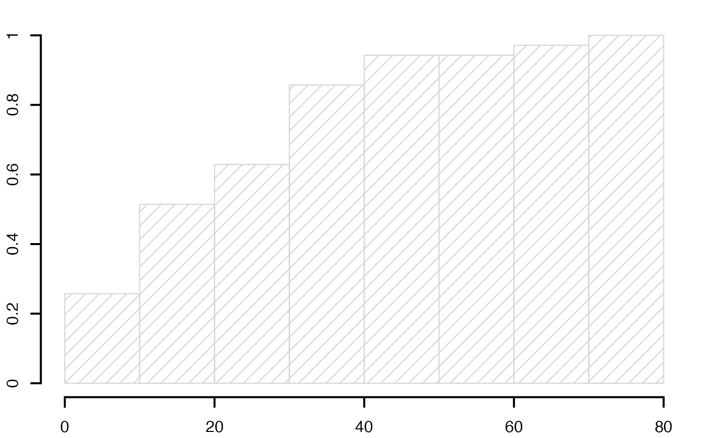
#axis(2,at=c(0,.2,.4,.6,.8,1)*length(data3),labels=c(0,.2,.4,.6,.8,1)*length(data3),lwd=2)
#suppressWarnings(par(oldpar))Europe Salariés
data(Europe)
var1<- Europe$Salariés
varN <- "_Sal"
xi <- unique(sort(var1))
ni <- as.vector(table(var1))
data2 <- cbind(xi,ni)batoneffnew
oldpar <- par()
par(mar = c(2, 2, 1, 1) + 0.1, mgp=c(2,1,0))
plot(xi,ni,type='h',xlab="",ylab="",lwd=2,ylim=c(0,max(ni))) #,xaxt="n"
#axis(1, at = 1:6, labels = c(1:5,6))
#axis(1, at = 1:6, labels = c(1:5,"6 et plus"))
#suppressWarnings(par(oldpar))batonfrenew
oldpar <- par()
par(mar = c(2, 2, 1, 1) + 0.1, mgp=c(2,1,0))
plot(xi,ni/sum(ni),type='h',xlab="",ylab="",lwd=2,ylim=c(0,max(ni/sum(ni)))) #,xaxt="n"
#suppressWarnings(par(oldpar))polyeffnew
oldpar <- par()
par(mar = c(2, 2, 1, 1) + 0.1, mgp=c(2,1,0))
plot(xi,ni,type='h',xlab="",ylab="",lwd=2,ylim=c(0,max(ni))) #,xaxt="n"
segments(xi[-length(xi)],ni[-length(xi)],xi[-1],ni[-1],lwd=2,col="#00FFFF")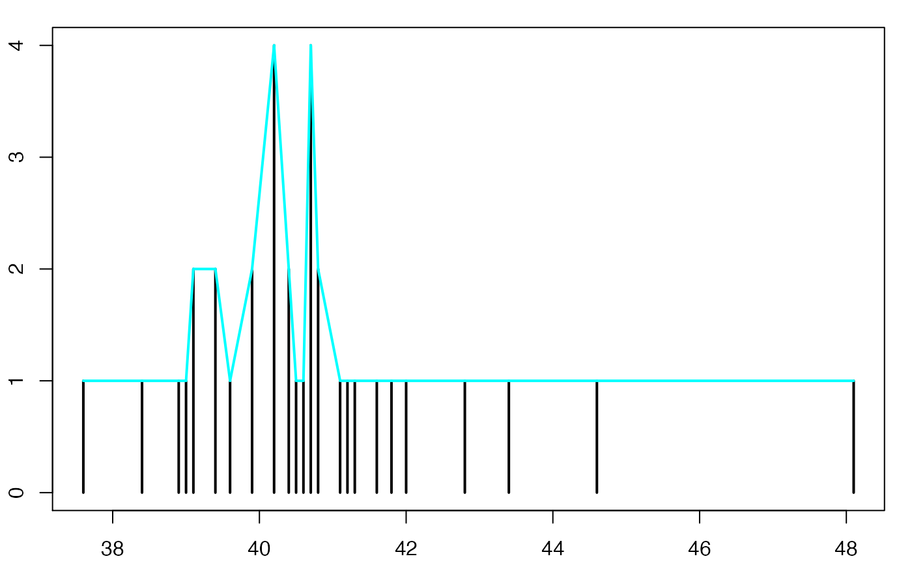
#suppressWarnings(par(oldpar))polyfrenew
oldpar <- par()
par(mar = c(2, 2, 1, 1) + 0.1, mgp=c(2,1,0))
plot(xi,ni/sum(ni),type='h',xlab="",ylab="",lwd=2,ylim=c(0,max(ni/sum(ni))))
segments(xi[-length(xi)],ni[-length(xi)]/sum(ni),xi[-1],ni[-1]/sum(ni),lwd=2,col="#00FFFF")
#suppressWarnings(par(oldpar))polyeffcumnew
nisum <- rep(ni[1],length(ni))
for (iii in 2:length(ni))
{
nisum[iii] <- nisum[iii-1]+ni[iii]
}
oldpar <- par()
par(mar = c(2, 2, 1, 1) + 0.1, mgp=c(2,1,0))
plot(xi,nisum,type='h',xlab="",ylab="",lwd=2,ylim=c(0,max(nisum))) #,xaxt="n"
segments(xi[-length(xi)],nisum[-length(xi)],xi[-1],nisum[-1],lwd=2,col="#00FFFF")
#suppressWarnings(par(oldpar))frecumnew
oldpar <- par()
par(mar = c(2, 2, 1, 1) + 0.1, mgp=c(2,1,0))
plot(xi,nisum/sum(ni),type='h',xlab="",ylab="",lwd=2,ylim=c(0,max(nisum/sum(ni)))) #,xaxt="n"
#suppressWarnings(par(oldpar))effcumnew
oldpar <- par()
par(mar = c(2, 2, 1, 1) + 0.1, mgp=c(2,1,0))
plot(xi,nisum,type='h',xlab="",ylab="",lwd=2,ylim=c(0,max(nisum))) #,xaxt="n"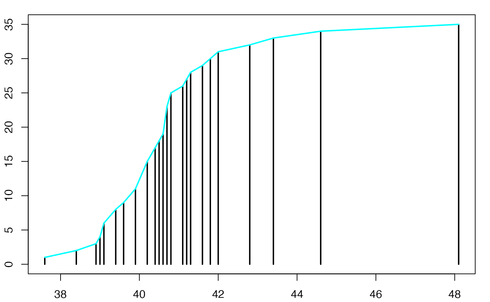
#suppressWarnings(par(oldpar))histofrenew
oldpar <- par()
par(mar = c(2, 2, 1, 1) + 0.1, mgp=c(2,1,0))
histofre <- hist(data3,breaks=breaks0,main="",freq=F,xlab="",ylab="",lwd=2,density=10)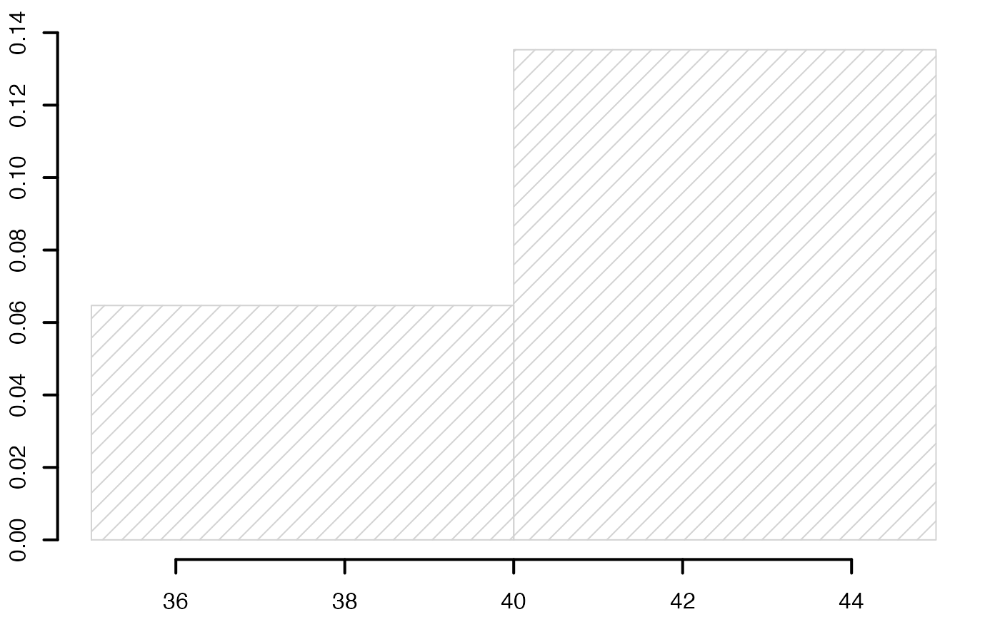
#suppressWarnings(par(oldpar))histopolfrenew
oldpar <- par()
par(mar = c(2, 2, 1, 1) + 0.1, mgp=c(2,1,0))
histofre <- hist(data3,breaks=breaks0,main="",freq=F,xlab="",ylab="",lwd=2,density=10)
segments(histofre$mids[-(length(breaks0)-1)],histofre$density[-(length(breaks0)-1)],histofre$mids[-1],histofre$density[-1],lwd=2,col="#00FFFF")
#suppressWarnings(par(oldpar))histofrecumnew
data4 <- rep((breaks0[-length(breaks0)]+diff(breaks0)/2)
,cumsum(table(cut(var1,breaks0))))
table(data4)
#> data4
#> 37.5 42.5
#> 11 34
oldpar <- par()
par(mar = c(2, 2, 1, 1) + 0.1, mgp=c(2,1,0))
histofrecum <- hist(data4,breaks=breaks0,main="",freq=F,xlab="",ylab="",lwd=2,yaxt="n",density=10)
axis(2,at=c(0,.2,.4,.6,.8,1)*max(histofrecum$dens),labels=c(0,.2,.4,.6,.8,1),lwd=2)
#suppressWarnings(par(oldpar))histopolfrecumnew
oldpar <- par()
par(mar = c(2, 2, 1, 1) + 0.1, mgp=c(2,1,0))
histofrecum <- hist(data4,breaks=breaks0,main="",freq=F,xlab="",ylab="",lwd=2,yaxt="n",density=10)
segments(histofrecum$mids[-(length(breaks0)-1)],histofrecum$density[-(length(breaks0)-1)],histofrecum$mids[-1],histofrecum$density[-1],lwd=2,col="#00FFFF")
axis(2,at=c(0,.2,.4,.6,.8,1)*max(histofrecum$dens),labels=c(0,.2,.4,.6,.8,1),lwd=2)
#suppressWarnings(par(oldpar))histopoleffcumnew
oldpar <- par()
par(mar = c(2, 2, 1, 1) + 0.1, mgp=c(2,1,0))
histoeffcum <- hist(data4,breaks=breaks0,main="",freq=T,xlab="",ylab="",lwd=2,density=10) #,yaxt="n"
segments(histoeffcum$mids[-(length(breaks0)-1)],histoeffcum$counts[-(length(breaks0)-1)],histoeffcum$mids[-1],histoeffcum$counts[-1],lwd=2,col="#00FFFF")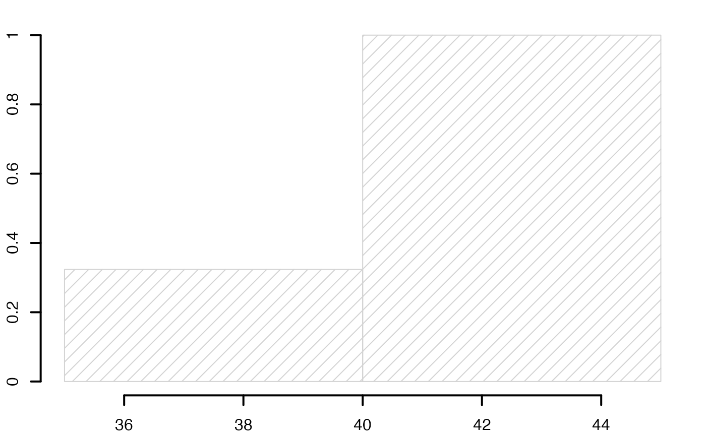
#axis(2,at=c(0,.2,.4,.6,.8,1)*length(data3),labels=c(0,.2,.4,.6,.8,1)*length(data3),lwd=2)
#suppressWarnings(par(oldpar))Europe Non-salariés
data(Europe)
var1<- Europe$NonSalariés
varN <- "_NonSal"
xi <- unique(sort(var1))
ni <- as.vector(table(var1))
data2 <- cbind(xi,ni)batoneffnew
oldpar <- par()
par(mar = c(2, 2, 1, 1) + 0.1, mgp=c(2,1,0))
plot(xi,ni,type='h',xlab="",ylab="",lwd=2,ylim=c(0,max(ni))) #,xaxt="n"
#axis(1, at = 1:6, labels = c(1:5,6))
#axis(1, at = 1:6, labels = c(1:5,"6 et plus"))
#suppressWarnings(par(oldpar))batonfrenew
oldpar <- par()
par(mar = c(2, 2, 1, 1) + 0.1, mgp=c(2,1,0))
plot(xi,ni/sum(ni),type='h',xlab="",ylab="",lwd=2,ylim=c(0,max(ni/sum(ni)))) #,xaxt="n"
#suppressWarnings(par(oldpar))polyeffnew
oldpar <- par()
par(mar = c(2, 2, 1, 1) + 0.1, mgp=c(2,1,0))
plot(xi,ni,type='h',xlab="",ylab="",lwd=2,ylim=c(0,max(ni))) #,xaxt="n"
segments(xi[-length(xi)],ni[-length(xi)],xi[-1],ni[-1],lwd=2,col="#00FFFF")
#suppressWarnings(par(oldpar))polyfrenew
oldpar <- par()
par(mar = c(2, 2, 1, 1) + 0.1, mgp=c(2,1,0))
plot(xi,ni/sum(ni),type='h',xlab="",ylab="",lwd=2,ylim=c(0,max(ni/sum(ni))))
segments(xi[-length(xi)],ni[-length(xi)]/sum(ni),xi[-1],ni[-1]/sum(ni),lwd=2,col="#00FFFF")
#suppressWarnings(par(oldpar))polyeffcumnew
nisum <- rep(ni[1],length(ni))
for (iii in 2:length(ni))
{
nisum[iii] <- nisum[iii-1]+ni[iii]
}
oldpar <- par()
par(mar = c(2, 2, 1, 1) + 0.1, mgp=c(2,1,0))
plot(xi,nisum,type='h',xlab="",ylab="",lwd=2,ylim=c(0,max(nisum))) #,xaxt="n"
segments(xi[-length(xi)],nisum[-length(xi)],xi[-1],nisum[-1],lwd=2,col="#00FFFF")
#suppressWarnings(par(oldpar))frecumnew
oldpar <- par()
par(mar = c(2, 2, 1, 1) + 0.1, mgp=c(2,1,0))
plot(xi,nisum/sum(ni),type='h',xlab="",ylab="",lwd=2,ylim=c(0,max(nisum/sum(ni)))) #,xaxt="n"
#suppressWarnings(par(oldpar))effcumnew
oldpar <- par()
par(mar = c(2, 2, 1, 1) + 0.1, mgp=c(2,1,0))
plot(xi,nisum,type='h',xlab="",ylab="",lwd=2,ylim=c(0,max(nisum))) #,xaxt="n"
#suppressWarnings(par(oldpar))histofrenew
oldpar <- par()
par(mar = c(2, 2, 1, 1) + 0.1, mgp=c(2,1,0))
histofre <- hist(data3,breaks=breaks0,main="",freq=F,xlab="",ylab="",lwd=2,density=10)
#suppressWarnings(par(oldpar))histopolfrenew
oldpar <- par()
par(mar = c(2, 2, 1, 1) + 0.1, mgp=c(2,1,0))
histofre <- hist(data3,breaks=breaks0,main="",freq=F,xlab="",ylab="",lwd=2,density=10)
segments(histofre$mids[-(length(breaks0)-1)],histofre$density[-(length(breaks0)-1)],histofre$mids[-1],histofre$density[-1],lwd=2,col="#00FFFF")
#suppressWarnings(par(oldpar))histopoleffcumnew
oldpar <- par()
par(mar = c(2, 2, 1, 1) + 0.1, mgp=c(2,1,0))
histoeffcum <- hist(data4,breaks=breaks0,main="",freq=T,xlab="",ylab="",lwd=2,density=10) #,yaxt="n"
segments(histoeffcum$mids[-(length(breaks0)-1)],histoeffcum$counts[-(length(breaks0)-1)],histoeffcum$mids[-1],histoeffcum$counts[-1],lwd=2,col="#00FFFF")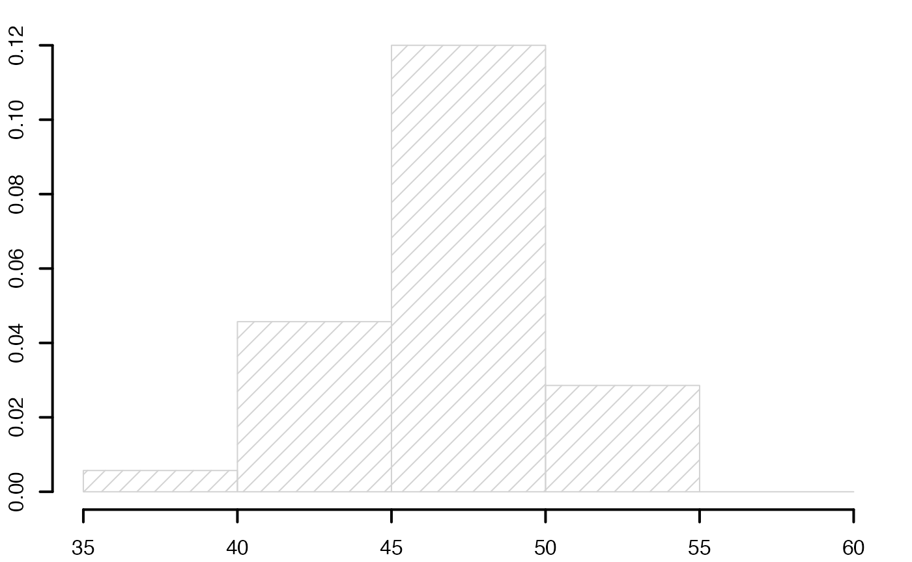
#axis(2,at=c(0,.2,.4,.6,.8,1)*length(data3),labels=c(0,.2,.4,.6,.8,1)*length(data3),lwd=2)
#suppressWarnings(par(oldpar))histofrecumnew
data4 <- rep((breaks0[-length(breaks0)]+diff(breaks0)/2)
,cumsum(table(cut(var1,breaks0))))
table(data4)
#> data4
#> 37.5 42.5 47.5 52.5 57.5
#> 1 9 30 35 35
oldpar <- par()
par(mar = c(2, 2, 1, 1) + 0.1, mgp=c(2,1,0))
histofrecum <- hist(data4,breaks=breaks0,main="",freq=F,xlab="",ylab="",lwd=2,yaxt="n",density=10)
axis(2,at=c(0,.2,.4,.6,.8,1)*max(histofrecum$dens),labels=c(0,.2,.4,.6,.8,1),lwd=2)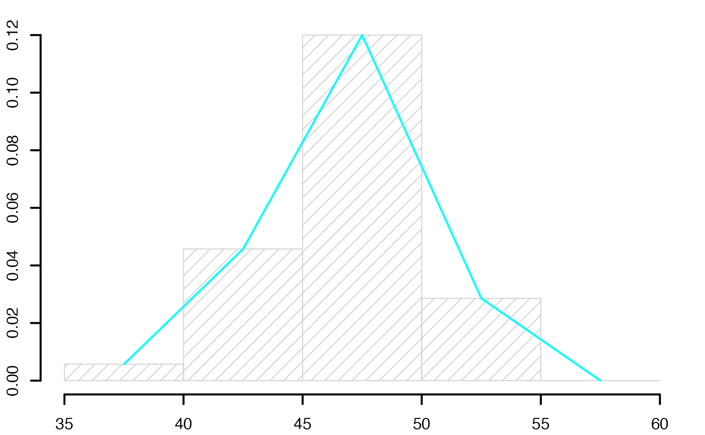
#suppressWarnings(par(oldpar))histopolfrecumnew
oldpar <- par()
par(mar = c(2, 2, 1, 1) + 0.1, mgp=c(2,1,0))
histofrecum <- hist(data4,breaks=breaks0,main="",freq=F,xlab="",ylab="",lwd=2,yaxt="n",density=10)
segments(histofrecum$mids[-(length(breaks0)-1)],histofrecum$density[-(length(breaks0)-1)],histofrecum$mids[-1],histofrecum$density[-1],lwd=2,col="#00FFFF")
axis(2,at=c(0,.2,.4,.6,.8,1)*max(histofrecum$dens),labels=c(0,.2,.4,.6,.8,1),lwd=2)
#suppressWarnings(par(oldpar))histopoleffcumnew
oldpar <- par()
par(mar = c(2, 2, 1, 1) + 0.1, mgp=c(2,1,0))
histoeffcum <- hist(data4,breaks=breaks0,main="",freq=T,xlab="",ylab="",lwd=2,density=10) #,yaxt="n"
segments(histoeffcum$mids[-(length(breaks0)-1)],histoeffcum$counts[-(length(breaks0)-1)],histoeffcum$mids[-1],histoeffcum$counts[-1],lwd=2,col="#00FFFF")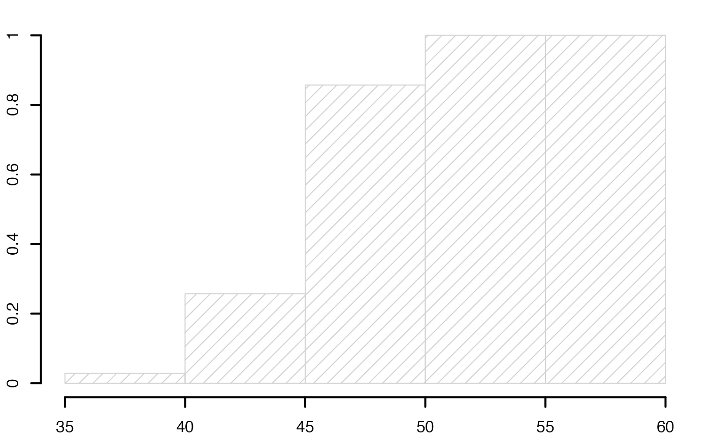
#axis(2,at=c(0,.2,.4,.6,.8,1)*length(data3),labels=c(0,.2,.4,.6,.8,1)*length(data3),lwd=2)
#suppressWarnings(par(oldpar))Analyse du tableau Europe emploi
data(Europe)Position
format(cbind(Moy=colMeans(Europe[,c(2,3,4,6,5)]), Q1=
c(quantile(Europe[,2],type=6)[2],quantile(Europe[,3],type=6)[2],quantile(Europe[,4],type=6)[2],quantile(Europe[,6],type=6)[2],quantile(Europe[,5],type=6)[2]), Q2=
c(quantile(Europe[,2],type=6)[3],quantile(Europe[,3],type=6)[3],quantile(Europe[,4],type=6)[3],quantile(Europe[,6],type=6)[3],quantile(Europe[,5],type=6)[3]), Q3=
c(quantile(Europe[,2],type=6)[4],quantile(Europe[,3],type=6)[4],quantile(Europe[,4],type=6)[4],quantile(Europe[,6],type=6)[4],quantile(Europe[,5],type=6)[4])),digits=3)
#> Moy Q1 Q2 Q3
#> Partiel_Ens "15.01" " 6.30" "11.30" "22.50"
#> Partiel_H " 8.03" " 4.70" " 6.60" "10.10"
#> Partiel_F "23.09" " 9.30" "17.00" "33.90"
#> NonSalariés "46.51" "45.00" "46.40" "48.50"
#> Salariés "40.72" "39.60" "40.50" "41.20"Dispersion
tab2=cbind(
sd=c(sqrt(1/length(Europe[,2])*sum((Europe[,2]-mean(Europe[,2]))^2)),
sqrt(1/length(Europe[,3])*sum((Europe[,3]-mean(Europe[,3]))^2)),
sqrt(1/length(Europe[,4])*sum((Europe[,4]-mean(Europe[,4]))^2)),
sqrt(1/length(Europe[,6])*sum((Europe[,6]-mean(Europe[,6]))^2)),
sqrt(1/length(Europe[,5])*sum((Europe[,5]-mean(Europe[,5]))^2))
),
mad=c(quantile(abs(Europe[,2]-quantile(Europe[,2],type=6)[3]),type=6)[3],
quantile(abs(Europe[,3]-quantile(Europe[,3],type=6)[3]),type=6)[3],
quantile(abs(Europe[,4]-quantile(Europe[,4],type=6)[3]),type=6)[3],
quantile(abs(Europe[,6]-quantile(Europe[,6],type=6)[3]),type=6)[3],
quantile(abs(Europe[,5]-quantile(Europe[,5],type=6)[3]),type=6)[3]
),
Range=c(diff(range(Europe[,2])),
diff(range(Europe[,3])),
diff(range(Europe[,4])),
diff(range(Europe[,6])),
diff(range(Europe[,5])))
,
EIQ=c(quantile(Europe[,2],type=6)[4],quantile(Europe[,3],type=6)[4],quantile(Europe[,4],type=6)[4],quantile(Europe[,6],type=6)[4],quantile(Europe[,5],type=6)[4])-c(quantile(Europe[,2],type=6)[2],quantile(Europe[,3],type=6)[2],quantile(Europe[,4],type=6)[2],quantile(Europe[,6],type=6)[2],quantile(Europe[,5],type=6)[2])
,
CV=c(sqrt(1/length(Europe[,2])*sum((Europe[,2]-mean(Europe[,2]))^2)),
sqrt(1/length(Europe[,3])*sum((Europe[,3]-mean(Europe[,3]))^2)),
sqrt(1/length(Europe[,4])*sum((Europe[,4]-mean(Europe[,4]))^2)),
sqrt(1/length(Europe[,6])*sum((Europe[,6]-mean(Europe[,6]))^2)),
sqrt(1/length(Europe[,5])*sum((Europe[,5]-mean(Europe[,5]))^2)))/colMeans(Europe[,c(2,3,4,6,5)])*100)
rownames(tab2) <- colnames(Europe)[c(2,3,4,6,5)]
round(tab2,digits=3)
#> sd mad Range EIQ CV
#> Partiel_Ens 10.559 6.5 48.3 16.2 70.364
#> Partiel_H 5.071 2.9 26.2 5.4 63.184
#> Partiel_F 17.188 10.8 73.1 24.6 74.426
#> NonSalariés 3.074 1.5 13.6 3.5 6.610
#> Salariés 1.847 0.7 10.5 1.6 4.536Forme
nn=length(Europe[,2])
tab5=
cbind(
AsyFis=
c(
1/nn*sum((Europe[,2]-mean(Europe[,2]))^3)/(1/nn*sum((Europe[,2]-mean(Europe[,2]))^2))^{3/2},
1/nn*sum((Europe[,3]-mean(Europe[,3]))^3)/(1/nn*sum((Europe[,3]-mean(Europe[,3]))^2))^{3/2},
1/nn*sum((Europe[,4]-mean(Europe[,4]))^3)/(1/nn*sum((Europe[,4]-mean(Europe[,4]))^2))^{3/2},
1/nn*sum((Europe[,5]-mean(Europe[,5]))^3)/(1/nn*sum((Europe[,5]-mean(Europe[,5]))^2))^{3/2},
1/nn*sum((Europe[,6]-mean(Europe[,6]))^3)/(1/nn*sum((Europe[,6]-mean(Europe[,6]))^2))^{3/2}
)
,
AsyPea=
c(
1/nn*sum((Europe[,2]-mean(Europe[,2]))^3)/(1/nn*sum((Europe[,2]-mean(Europe[,2]))^2))^{3/2},
1/nn*sum((Europe[,3]-mean(Europe[,3]))^3)/(1/nn*sum((Europe[,3]-mean(Europe[,3]))^2))^{3/2},
1/nn*sum((Europe[,4]-mean(Europe[,4]))^3)/(1/nn*sum((Europe[,4]-mean(Europe[,4]))^2))^{3/2},
1/nn*sum((Europe[,5]-mean(Europe[,5]))^3)/(1/nn*sum((Europe[,5]-mean(Europe[,5]))^2))^{3/2},
1/nn*sum((Europe[,6]-mean(Europe[,6]))^3)/(1/nn*sum((Europe[,6]-mean(Europe[,6]))^2))^{3/2}
)^2
,
AppFis=
c(
1/nn*sum((Europe[,2]-mean(Europe[,2]))^4)/(1/nn*sum((Europe[,2]-mean(Europe[,2]))^2))^{2},
1/nn*sum((Europe[,3]-mean(Europe[,3]))^4)/(1/nn*sum((Europe[,3]-mean(Europe[,3]))^2))^{2},
1/nn*sum((Europe[,4]-mean(Europe[,4]))^4)/(1/nn*sum((Europe[,4]-mean(Europe[,4]))^2))^{2},
1/nn*sum((Europe[,5]-mean(Europe[,5]))^4)/(1/nn*sum((Europe[,5]-mean(Europe[,5]))^2))^{2},
1/nn*sum((Europe[,6]-mean(Europe[,6]))^4)/(1/nn*sum((Europe[,6]-mean(Europe[,6]))^2))^{2}
)-3
,
AppPea=
c(
1/nn*sum((Europe[,2]-mean(Europe[,2]))^4)/(1/nn*sum((Europe[,2]-mean(Europe[,2]))^2))^{2},
1/nn*sum((Europe[,3]-mean(Europe[,3]))^4)/(1/nn*sum((Europe[,3]-mean(Europe[,3]))^2))^{2},
1/nn*sum((Europe[,4]-mean(Europe[,4]))^4)/(1/nn*sum((Europe[,4]-mean(Europe[,4]))^2))^{2},
1/nn*sum((Europe[,5]-mean(Europe[,5]))^4)/(1/nn*sum((Europe[,5]-mean(Europe[,5]))^2))^{2},
1/nn*sum((Europe[,6]-mean(Europe[,6]))^4)/(1/nn*sum((Europe[,6]-mean(Europe[,6]))^2))^{2}
)
)Analyse du tableau Europe emploi après regroupement des données
Création naïve des classes
distg1<-table(cut(Europe$Partiel_Ens,c(0,10,20,30,40,50,60,70,80)))
distg2<-table(cut(Europe$Partiel_H,c(0,10,20,30,40,50,60,70,80)))
distg3<-table(cut(Europe$Partiel_F,c(0,10,20,30,40,50,60,70,80)))
distg1
#>
#> (0,10] (10,20] (20,30] (30,40] (40,50] (50,60] (60,70] (70,80]
#> 16 9 8 1 0 1 0 0
distg2
#>
#> (0,10] (10,20] (20,30] (30,40] (40,50] (50,60] (60,70] (70,80]
#> 25 9 1 0 0 0 0 0
distg3
#>
#> (0,10] (10,20] (20,30] (30,40] (40,50] (50,60] (60,70] (70,80]
#> 9 9 4 8 3 0 1 1
#Centres des classes
vald123<-(c(0,10,20,30,40,50,60,70,80)[-9]+c(0,10,20,30,40,50,60,70,80)[-1])/2
distg4<-table(cut(Europe$Salariés,c(35,40,45,50,55,60)))
distg5<-table(cut(Europe$NonSalariés,c(35,40,45,50,55,60)))
distg4
#>
#> (35,40] (40,45] (45,50] (50,55] (55,60]
#> 11 23 1 0 0
distg5
#>
#> (35,40] (40,45] (45,50] (50,55] (55,60]
#> 1 8 21 5 0
#Centres des classes
vald45<-(c(35,40,45,50,55,60)[-6]+c(35,40,45,50,55,60)[-1])/2Utilisation du package actuar
if(!("actuar" %in% installed.packages())){install.packages("actuar")}
library(actuar)
x1 <- grouped.data(Partiel_Ens=Europe$Partiel_Ens,breaks=c(0,10,20,30,40,50,60,70,80))
x2 <- grouped.data(Partiel_Ens=Europe$Partiel_H,breaks=c(0,10,20,30,40,50,60,70,80))
x3 <- grouped.data(Partiel_Ens=Europe$Partiel_F,breaks=c(0,10,20,30,40,50,60,70,80))
x4 <- grouped.data(Salariés=Europe$Salariés,breaks=c(0,10,20,30,40,50,60,70,80))
x5 <- grouped.data(NonSalariés=Europe$NonSalariés,breaks=c(0,10,20,30,40,50,60,70,80))
cbind(x1,x2,x3)
#> Var.1 Partiel_Ens Var.3 Partiel_Ens Var.5 Partiel_Ens
#> 1 (0, 10] 16 (0, 10] 25 (0, 10] 9
#> 2 (10, 20] 9 (10, 20] 9 (10, 20] 9
#> 3 (20, 30] 8 (20, 30] 1 (20, 30] 4
#> 4 (30, 40] 1 (30, 40] 0 (30, 40] 8
#> 5 (40, 50] 0 (40, 50] 0 (40, 50] 3
#> 6 (50, 60] 1 (50, 60] 0 (50, 60] 0
#> 7 (60, 70] 0 (60, 70] 0 (60, 70] 1
#> 8 (70, 80] 0 (70, 80] 0 (70, 80] 1
cbind(x4,x5)
#> Var.1 Salariés Var.3 NonSalariés
#> 1 (0, 10] 0 (0, 10] 0
#> 2 (10, 20] 0 (10, 20] 0
#> 3 (20, 30] 0 (20, 30] 0
#> 4 (30, 40] 11 (30, 40] 1
#> 5 (40, 50] 24 (40, 50] 29
#> 6 (50, 60] 0 (50, 60] 5
#> 7 (60, 70] 0 (60, 70] 0
#> 8 (70, 80] 0 (70, 80] 0
c(
weighted.mean(vald123,distg1),
weighted.mean(vald123,distg2),
weighted.mean(vald123,distg2),
weighted.mean(vald45,distg4),
weighted.mean(vald45,distg5)
)
#> [1] 14.428571 8.142857 8.142857 41.071429 46.785714
tab3=cbind(
c(
mean(x1),
mean(x2),
mean(x3),
mean(x4),
mean(x5)
),
rbind(quantile(x1),quantile(x2),quantile(x3),quantile(x4),quantile(x5))[,c(2,3,4)]
)
round(c(
mean(x1),
mean(x2),
mean(x3),
mean(x4),
mean(x5)
),digits=2)
#> Partiel_Ens Partiel_Ens Partiel_Ens Salariés NonSalariés
#> 14.43 8.14 23.86 41.86 46.14
round( rbind(quantile(x1),quantile(x2),quantile(x3),quantile(x4),quantile(x5))[,c(2,3,4)],digits=2)
#> 25% 50% 75%
#> [1,] 5.47 11.67 21.56
#> [2,] 3.50 7.00 11.39
#> [3,] 9.72 19.44 35.31
#> [4,] 37.95 42.71 46.35
#> [5,] 42.67 45.69 48.71
round(tab3,digits=2)
#> 25% 50% 75%
#> Partiel_Ens 14.43 5.47 11.67 21.56
#> Partiel_Ens 8.14 3.50 7.00 11.39
#> Partiel_Ens 23.86 9.72 19.44 35.31
#> Salariés 41.86 37.95 42.71 46.35
#> NonSalariés 46.14 42.67 45.69 48.71
tab4=cbind(
sigma=c(
sqrt(weighted.mean(((x1[,1][-1]+x1[,1][-length(x1[,1])])/2-mean(x1))^2,x1[,2])-1/12/weighted.mean(diff(x1[,1])^2,x1[,2])),
sqrt(weighted.mean(((x2[,1][-1]+x2[,1][-length(x2[,1])])/2-mean(x2))^2,x2[,2])-1/12/weighted.mean(diff(x2[,1])^2,x2[,2])),
sqrt(weighted.mean(((x3[,1][-1]+x3[,1][-length(x3[,1])])/2-mean(x3))^2,x3[,2])-1/12/weighted.mean(diff(x3[,1])^2,x3[,2])),
sqrt(weighted.mean(((x4[,1][-1]+x4[,1][-length(x4[,1])])/2-mean(x4))^2,x4[,2])-1/12/weighted.mean(diff(x4[,1])^2,x4[,2])),
sqrt(weighted.mean(((x5[,1][-1]+x5[,1][-length(x5[,1])])/2-mean(x5))^2,x5[,2])-1/12/weighted.mean(diff(x5[,1])^2,x5[,2]))
),
EIQ=t(diff(t(rbind(quantile(x1),quantile(x2),quantile(x3),quantile(x4),quantile(x5))[,c(2,4)]))),
CV=c(
sqrt(weighted.mean(((x1[,1][-1]+x1[,1][-length(x1[,1])])/2-mean(x1))^2,x1[,2])-1/12/weighted.mean(diff(x1[,1])^2,x1[,2]))/mean(x1)*100,
sqrt(weighted.mean(((x2[,1][-1]+x2[,1][-length(x2[,1])])/2-mean(x2))^2,x2[,2])-1/12/weighted.mean(diff(x2[,1])^2,x2[,2]))/mean(x2)*100,
sqrt(weighted.mean(((x3[,1][-1]+x3[,1][-length(x3[,1])])/2-mean(x3))^2,x3[,2])-1/12/weighted.mean(diff(x3[,1])^2,x3[,2]))/mean(x3)*100,
sqrt(weighted.mean(((x4[,1][-1]+x4[,1][-length(x4[,1])])/2-mean(x4))^2,x4[,2])-1/12/weighted.mean(diff(x4[,1])^2,x4[,2]))/mean(x4)*100,
sqrt(weighted.mean(((x5[,1][-1]+x5[,1][-length(x5[,1])])/2-mean(x5))^2,x5[,2])-1/12/weighted.mean(diff(x5[,1])^2,x5[,2]))/mean(x5)*100
))
round(tab4[,1],digits=2)
#> Partiel_Ens Partiel_Ens Partiel_Ens Salariés NonSalariés
#> 11.20 5.22 17.37 4.64 3.98
round(tab4[,2],digits=2)
#> Partiel_Ens Partiel_Ens Partiel_Ens Salariés NonSalariés
#> 16.09 7.89 25.59 8.40 6.03
round(tab4[,3],digits=2)
#> Partiel_Ens Partiel_Ens Partiel_Ens Salariés NonSalariés
#> 77.61 64.12 72.79 11.09 8.62
tab6=cbind(
asyFis=
c(
weighted.mean(((x1[,1][-1]+x1[,1][-length(x1[,1])])/2-mean(x1))^3,x1[,2])/sqrt(weighted.mean(((x1[,1][-1]+x1[,1][-length(x1[,1])])/2-mean(x1))^2,x1[,2])-1/12/weighted.mean(diff(x1[,1])^2,x1[,2]))^3,
weighted.mean(((x2[,1][-1]+x2[,1][-length(x2[,1])])/2-mean(x2))^3,x2[,2])/sqrt(weighted.mean(((x2[,1][-1]+x2[,1][-length(x2[,1])])/2-mean(x2))^2,x2[,2])-1/12/weighted.mean(diff(x2[,1])^2,x2[,2]))^3,
weighted.mean(((x3[,1][-1]+x3[,1][-length(x3[,1])])/2-mean(x3))^3,x3[,2])/sqrt(weighted.mean(((x3[,1][-1]+x3[,1][-length(x3[,1])])/2-mean(x3))^2,x3[,2])-1/12/weighted.mean(diff(x3[,1])^2,x3[,2]))^3,
weighted.mean(((x4[,1][-1]+x4[,1][-length(x4[,1])])/2-mean(x4))^3,x4[,2])/sqrt(weighted.mean(((x4[,1][-1]+x4[,1][-length(x4[,1])])/2-mean(x4))^2,x4[,2])-1/12/weighted.mean(diff(x4[,1])^2,x4[,2]))^3,
weighted.mean(((x5[,1][-1]+x5[,1][-length(x5[,1])])/2-mean(x5))^3,x5[,2])/sqrt(weighted.mean(((x5[,1][-1]+x5[,1][-length(x5[,1])])/2-mean(x5))^2,x5[,2])-1/12/weighted.mean(diff(x5[,1])^2,x5[,2]))^3
)
,
asyPea=
c(
weighted.mean(((x1[,1][-1]+x1[,1][-length(x1[,1])])/2-mean(x1))^3,x1[,2])/sqrt(weighted.mean(((x1[,1][-1]+x1[,1][-length(x1[,1])])/2-mean(x1))^2,x1[,2])-1/12/weighted.mean(diff(x1[,1])^2,x1[,2]))^3,
weighted.mean(((x2[,1][-1]+x2[,1][-length(x2[,1])])/2-mean(x2))^3,x2[,2])/sqrt(weighted.mean(((x2[,1][-1]+x2[,1][-length(x2[,1])])/2-mean(x2))^2,x2[,2])-1/12/weighted.mean(diff(x2[,1])^2,x2[,2]))^3,
weighted.mean(((x3[,1][-1]+x3[,1][-length(x3[,1])])/2-mean(x3))^3,x3[,2])/sqrt(weighted.mean(((x3[,1][-1]+x3[,1][-length(x3[,1])])/2-mean(x3))^2,x3[,2])-1/12/weighted.mean(diff(x3[,1])^2,x3[,2]))^3,
weighted.mean(((x4[,1][-1]+x4[,1][-length(x4[,1])])/2-mean(x4))^3,x4[,2])/sqrt(weighted.mean(((x4[,1][-1]+x4[,1][-length(x4[,1])])/2-mean(x4))^2,x4[,2])-1/12/weighted.mean(diff(x4[,1])^2,x4[,2]))^3,
weighted.mean(((x5[,1][-1]+x5[,1][-length(x5[,1])])/2-mean(x5))^3,x5[,2])/sqrt(weighted.mean(((x5[,1][-1]+x5[,1][-length(x5[,1])])/2-mean(x5))^2,x5[,2])-1/12/weighted.mean(diff(x5[,1])^2,x5[,2]))^3
)^2
,
appFis=
c(
(weighted.mean(((x1[,1][-1]+x1[,1][-length(x1[,1])])/2-mean(x1))^4,x1[,2])
-10^2/2*weighted.mean(((x1[,1][-1]+x1[,1][-length(x1[,1])])/2-mean(x1))^2,x1[,2])
+7/240*10^4)/sqrt(weighted.mean(((x1[,1][-1]+x1[,1][-length(x1[,1])])/2-mean(x1))^2,x1[,2])-1/12/weighted.mean(diff(x1[,1])^2,x1[,2]))^4,
(weighted.mean(((x2[,1][-1]+x2[,1][-length(x2[,1])])/2-mean(x2))^4,x2[,2])
-10^2/2*weighted.mean(((x2[,1][-1]+x2[,1][-length(x2[,1])])/2-mean(x2))^2,x2[,2])
+7/240*10^4)/sqrt(weighted.mean(((x2[,1][-1]+x2[,1][-length(x2[,1])])/2-mean(x2))^2,x2[,2])-1/12/weighted.mean(diff(x2[,1])^2,x2[,2]))^4,
(weighted.mean(((x3[,1][-1]+x3[,1][-length(x3[,1])])/2-mean(x3))^4,x3[,2])
-10^2/2*weighted.mean(((x3[,1][-1]+x3[,1][-length(x3[,1])])/2-mean(x3))^2,x3[,2])
+7/240*10^4)/sqrt(weighted.mean(((x3[,1][-1]+x3[,1][-length(x3[,1])])/2-mean(x3))^2,x3[,2])-1/12/weighted.mean(diff(x3[,1])^2,x3[,2]))^4,
(weighted.mean(((x4[,1][-1]+x4[,1][-length(x4[,1])])/2-mean(x4))^4,x4[,2])
-10^2/2*weighted.mean(((x4[,1][-1]+x4[,1][-length(x4[,1])])/2-mean(x4))^2,x4[,2])
+7/240*10^4)/sqrt(weighted.mean(((x4[,1][-1]+x4[,1][-length(x4[,1])])/2-mean(x4))^2,x4[,2])-1/12/weighted.mean(diff(x4[,1])^2,x4[,2]))^4,
(weighted.mean(((x5[,1][-1]+x5[,1][-length(x5[,1])])/2-mean(x5))^4,x5[,2])
-10^2/2*weighted.mean(((x5[,1][-1]+x5[,1][-length(x5[,1])])/2-mean(x5))^2,x5[,2])
+7/240*10^4)/sqrt(weighted.mean(((x5[,1][-1]+x5[,1][-length(x5[,1])])/2-mean(x5))^2,x5[,2])-1/12/weighted.mean(diff(x5[,1])^2,x5[,2]))^4
)-3
,
appPea=
c(
(weighted.mean(((x1[,1][-1]+x1[,1][-length(x1[,1])])/2-mean(x1))^4,x1[,2])
-10^2/2*weighted.mean(((x1[,1][-1]+x1[,1][-length(x1[,1])])/2-mean(x1))^2,x1[,2])
+7/240*10^4)/sqrt(weighted.mean(((x1[,1][-1]+x1[,1][-length(x1[,1])])/2-mean(x1))^2,x1[,2])-1/12/weighted.mean(diff(x1[,1])^2,x1[,2]))^4,
(weighted.mean(((x2[,1][-1]+x2[,1][-length(x2[,1])])/2-mean(x2))^4,x2[,2])
-10^2/2*weighted.mean(((x2[,1][-1]+x2[,1][-length(x2[,1])])/2-mean(x2))^2,x2[,2])
+7/240*10^4)/sqrt(weighted.mean(((x2[,1][-1]+x2[,1][-length(x2[,1])])/2-mean(x2))^2,x2[,2])-1/12/weighted.mean(diff(x2[,1])^2,x2[,2]))^4,
(weighted.mean(((x3[,1][-1]+x3[,1][-length(x3[,1])])/2-mean(x3))^4,x3[,2])
-10^2/2*weighted.mean(((x3[,1][-1]+x3[,1][-length(x3[,1])])/2-mean(x3))^2,x3[,2])
+7/240*10^4)/sqrt(weighted.mean(((x3[,1][-1]+x3[,1][-length(x3[,1])])/2-mean(x3))^2,x3[,2])-1/12/weighted.mean(diff(x3[,1])^2,x3[,2]))^4,
(weighted.mean(((x4[,1][-1]+x4[,1][-length(x4[,1])])/2-mean(x4))^4,x4[,2])
-10^2/2*weighted.mean(((x4[,1][-1]+x4[,1][-length(x4[,1])])/2-mean(x4))^2,x4[,2])
+7/240*10^4)/sqrt(weighted.mean(((x4[,1][-1]+x4[,1][-length(x4[,1])])/2-mean(x4))^2,x4[,2])-1/12/weighted.mean(diff(x4[,1])^2,x4[,2]))^4,
(weighted.mean(((x5[,1][-1]+x5[,1][-length(x5[,1])])/2-mean(x5))^4,x5[,2])
-10^2/2*weighted.mean(((x5[,1][-1]+x5[,1][-length(x5[,1])])/2-mean(x5))^2,x5[,2])
+7/240*10^4)/sqrt(weighted.mean(((x5[,1][-1]+x5[,1][-length(x5[,1])])/2-mean(x5))^2,x5[,2])-1/12/weighted.mean(diff(x5[,1])^2,x5[,2]))^4
)
)
rownames(tab6) <- colnames(Europe[,-1])
round(tab6,digits=2)
#> asyFis asyPea appFis appPea
#> Partiel_Ens 1.46 2.12 2.28 5.28
#> Partiel_H 1.39 1.93 -0.48 2.52
#> Partiel_F 0.96 0.92 0.49 3.49
#> Salariés -0.80 0.64 -3.05 -0.05
#> NonSalariés 0.93 0.86 0.27 3.27